Exercise 46： Let AFCB be a cyclic trapezoid with FA//CB and FA=2CB. FC intersects AB at D. A, D, E are collinear and AE=3DE. Prove that FA⊥CE.
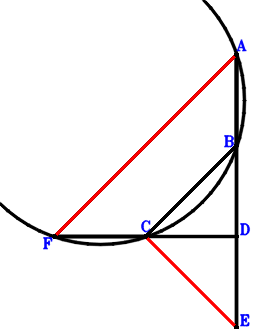
\(\because \) FA//CB and FA=2CB \(\therefore \small\overrightarrow{DB}=\dfrac{\small\overrightarrow{DA}}{2} + \small\overrightarrow{DC} - \dfrac{\small\overrightarrow{DF}}{2}\).\(\because \) A, D, E are collinear and AE=3DE \(\therefore \small\overrightarrow{DE}=- \dfrac{\small\overrightarrow{DA}}{2}\).\(\because \) AFCB is a cyclic quadrilateral, FC intersects AB at D \( \therefore- \small\overrightarrow{DA} \cdot \small\overrightarrow{DB} + \small\overrightarrow{DC} \cdot \small\overrightarrow{DF}=- \small\overrightarrow{DA} \cdot \left(\dfrac{\small\overrightarrow{DA}}{2} + \small\overrightarrow{DC} - \dfrac{\small\overrightarrow{DF}}{2}\right) + \small\overrightarrow{DC} \cdot \small\overrightarrow{DF}=- \dfrac{\small\overrightarrow{DA}^{2}}{2} - \small\overrightarrow{DA} \cdot \small\overrightarrow{DC} + \dfrac{\small\overrightarrow{DA} \cdot \small\overrightarrow{DF}}{2} + \small\overrightarrow{DC} \cdot \small\overrightarrow{DF}=0.\)In conclusion, \(\small\overrightarrow{EC} \cdot \small\overrightarrow{FA}=\left(\small\overrightarrow{DA} - \small\overrightarrow{DF}\right) \cdot \left(\small\overrightarrow{DC} - \small\overrightarrow{DE}\right)=\left(\dfrac{\small\overrightarrow{DA}}{2} + \small\overrightarrow{DC}\right) \cdot \left(\small\overrightarrow{DA} - \small\overrightarrow{DF}\right)=\dfrac{\small\overrightarrow{DA}^{2}}{2} + \small\overrightarrow{DA} \cdot \small\overrightarrow{DC} - \dfrac{\small\overrightarrow{DA} \cdot \small\overrightarrow{DF}}{2} - \small\overrightarrow{DC} \cdot \small\overrightarrow{DF}=0\), that is, FA⊥CE.
Exercise 48： Let AFCB be a cyclic trapezoid with FA//CB and FA=2CB. FC intersects AB at D. A, E, D are collinear and AE=3ED. G is the midpoint of CA. Prove that FA⊥GE.
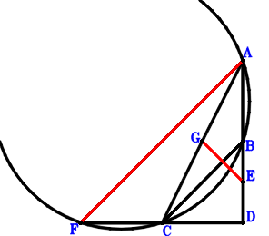
\(\because \) FA//CB and FA=2CB \(\therefore \small\overrightarrow{DB}=\dfrac{\small\overrightarrow{DA}}{2} + \small\overrightarrow{DC} - \dfrac{\small\overrightarrow{DF}}{2}\).\(\because \) A, E, D are collinear and AE=3ED \(\therefore \small\overrightarrow{DE}=\dfrac{\small\overrightarrow{DA}}{4}\).\(\because \) G is the midpoint of CA \(\therefore \small\overrightarrow{DG}=\dfrac{\small\overrightarrow{DA}}{2} + \dfrac{\small\overrightarrow{DC}}{2}\).\(\because \) AFCB is a cyclic quadrilateral, FC intersects AB at D \( \therefore- \small\overrightarrow{DA} \cdot \small\overrightarrow{DB} + \small\overrightarrow{DC} \cdot \small\overrightarrow{DF}=- \small\overrightarrow{DA} \cdot \left(\dfrac{\small\overrightarrow{DA}}{2} + \small\overrightarrow{DC} - \dfrac{\small\overrightarrow{DF}}{2}\right) + \small\overrightarrow{DC} \cdot \small\overrightarrow{DF}=- \dfrac{\small\overrightarrow{DA}^{2}}{2} - \small\overrightarrow{DA} \cdot \small\overrightarrow{DC} + \dfrac{\small\overrightarrow{DA} \cdot \small\overrightarrow{DF}}{2} + \small\overrightarrow{DC} \cdot \small\overrightarrow{DF}=0.\)In conclusion, \(\small\overrightarrow{EG} \cdot \small\overrightarrow{FA}=\left(\small\overrightarrow{DA} - \small\overrightarrow{DF}\right) \cdot \left(- \small\overrightarrow{DE} + \small\overrightarrow{DG}\right)=\left(\dfrac{\small\overrightarrow{DA}}{4} + \dfrac{\small\overrightarrow{DC}}{2}\right) \cdot \left(\small\overrightarrow{DA} - \small\overrightarrow{DF}\right)=\dfrac{\small\overrightarrow{DA}^{2}}{4} + \dfrac{\small\overrightarrow{DA} \cdot \small\overrightarrow{DC}}{2} - \dfrac{\small\overrightarrow{DA} \cdot \small\overrightarrow{DF}}{4} - \dfrac{\small\overrightarrow{DC} \cdot \small\overrightarrow{DF}}{2}=0\), that is, FA⊥GE.
Exercise 53： Let AFCB be a cyclic trapezoid with FA//CB and FA=2CB. ECDA is a trapezoid with EA//CD and EA=2CD. FC intersects AB at D. Prove that ED⊥FA.
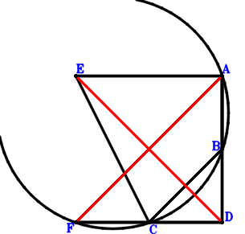
\(\because \) FA//CB and FA=2CB \(\therefore \small\overrightarrow{DB}=\dfrac{\small\overrightarrow{DA}}{2} + \small\overrightarrow{DC} - \dfrac{\small\overrightarrow{DF}}{2}\).\(\because \) EA//CD and EA=2CD \(\therefore \small\overrightarrow{DE}=\small\overrightarrow{DA} + 2 \small\overrightarrow{DC}\).\(\because \) AFCB is a cyclic quadrilateral, FC intersects AB at D \( \therefore- \small\overrightarrow{DA} \cdot \small\overrightarrow{DB} + \small\overrightarrow{DC} \cdot \small\overrightarrow{DF}=- \small\overrightarrow{DA} \cdot \left(\dfrac{\small\overrightarrow{DA}}{2} + \small\overrightarrow{DC} - \dfrac{\small\overrightarrow{DF}}{2}\right) + \small\overrightarrow{DC} \cdot \small\overrightarrow{DF}=- \dfrac{\small\overrightarrow{DA}^{2}}{2} - \small\overrightarrow{DA} \cdot \small\overrightarrow{DC} + \dfrac{\small\overrightarrow{DA} \cdot \small\overrightarrow{DF}}{2} + \small\overrightarrow{DC} \cdot \small\overrightarrow{DF}=0.\)In conclusion, \(\small\overrightarrow{DE} \cdot \small\overrightarrow{FA}=\small\overrightarrow{DE} \cdot \left(\small\overrightarrow{DA} - \small\overrightarrow{DF}\right)=\left(\small\overrightarrow{DA} + 2 \small\overrightarrow{DC}\right) \cdot \left(\small\overrightarrow{DA} - \small\overrightarrow{DF}\right)=\small\overrightarrow{DA}^{2} + 2 \small\overrightarrow{DA} \cdot \small\overrightarrow{DC} - \small\overrightarrow{DA} \cdot \small\overrightarrow{DF} - 2 \small\overrightarrow{DC} \cdot \small\overrightarrow{DF}=0\), that is, ED⊥FA.
Exercise 58： Let AFCB be a cyclic trapezoid with FA//CB and FA=2CB. FC intersects AB at D. A, E, D are collinear and AE=3ED. E is the midpoint of CG. Prove that FA⊥AG.
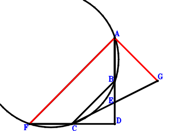
\(\because \) FA//CB and FA=2CB \(\therefore \small\overrightarrow{DB}=\dfrac{\small\overrightarrow{DA}}{2} + \small\overrightarrow{DC} - \dfrac{\small\overrightarrow{DF}}{2}\).\(\because \) A, E, D are collinear and AE=3ED \(\therefore \small\overrightarrow{DE}=\dfrac{\small\overrightarrow{DA}}{4}\).\(\because \) E is the midpoint of CG \(\therefore \small\overrightarrow{DG}=- \small\overrightarrow{DC} + 2 \small\overrightarrow{DE}=\dfrac{\small\overrightarrow{DA}}{2} - \small\overrightarrow{DC}\).\(\because \) AFCB is a cyclic quadrilateral, FC intersects AB at D \( \therefore- \small\overrightarrow{DA} \cdot \small\overrightarrow{DB} + \small\overrightarrow{DC} \cdot \small\overrightarrow{DF}=- \small\overrightarrow{DA} \cdot \left(\dfrac{\small\overrightarrow{DA}}{2} + \small\overrightarrow{DC} - \dfrac{\small\overrightarrow{DF}}{2}\right) + \small\overrightarrow{DC} \cdot \small\overrightarrow{DF}=- \dfrac{\small\overrightarrow{DA}^{2}}{2} - \small\overrightarrow{DA} \cdot \small\overrightarrow{DC} + \dfrac{\small\overrightarrow{DA} \cdot \small\overrightarrow{DF}}{2} + \small\overrightarrow{DC} \cdot \small\overrightarrow{DF}=0.\)In conclusion, \(\small\overrightarrow{FA} \cdot \small\overrightarrow{GA}=\left(\small\overrightarrow{DA} - \small\overrightarrow{DF}\right) \cdot \left(\small\overrightarrow{DA} - \small\overrightarrow{DG}\right)=\left(\dfrac{\small\overrightarrow{DA}}{2} + \small\overrightarrow{DC}\right) \cdot \left(\small\overrightarrow{DA} - \small\overrightarrow{DF}\right)=\dfrac{\small\overrightarrow{DA}^{2}}{2} + \small\overrightarrow{DA} \cdot \small\overrightarrow{DC} - \dfrac{\small\overrightarrow{DA} \cdot \small\overrightarrow{DF}}{2} - \small\overrightarrow{DC} \cdot \small\overrightarrow{DF}=0\), that is, FA⊥AG.
Exercise 91： Let ECDA be a trapezoid with EA//CD and EA=2CD. A, D, B are collinear and AB=3DB. FA⊥CB. Given that F, C, D are collinear and EF//AD, prove that \(AD·EF=2·CD·FD\).
Exercise 155： Let ADCB be a trapezoid with AB//DC and AB=2DC. EDCA is a trapezoid with EA//DC and EA=2DC. G is the midpoint of ED. FD⊥DC. Given that G, A, F are collinear and FB//AD, prove that \(AD·FB=2·AF·GA\).
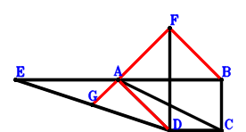
\(\because \) AB//DC and AB=2DC \(\therefore \small\overrightarrow{DB}=\small\overrightarrow{DA} + 2 \small\overrightarrow{DC}\).\(\because \) EA//DC and EA=2DC \(\therefore \small\overrightarrow{DE}=\small\overrightarrow{DA} - 2 \small\overrightarrow{DC}\).\(\because \) G is the midpoint of ED \(\therefore \small\overrightarrow{DG}=\dfrac{\small\overrightarrow{DE}}{2}=\dfrac{\small\overrightarrow{DA}}{2} - \small\overrightarrow{DC}\).\(\because \) FD⊥DC \( \therefore\small\overrightarrow{DC} \cdot \small\overrightarrow{DF}=0.\)In conclusion, \(\small\overrightarrow{BF} \cdot \small\overrightarrow{DA} + 2 \small\overrightarrow{FA} \cdot \small\overrightarrow{GA}=\small\overrightarrow{DA} \cdot \left(- \small\overrightarrow{DB} + \small\overrightarrow{DF}\right) + 2 \left(\small\overrightarrow{DA} - \small\overrightarrow{DF}\right) \cdot \left(\small\overrightarrow{DA} - \small\overrightarrow{DG}\right)=\small\overrightarrow{DA} \cdot \left(- \small\overrightarrow{DA} - 2 \small\overrightarrow{DC} + \small\overrightarrow{DF}\right) + 2 \left(\dfrac{\small\overrightarrow{DA}}{2} + \small\overrightarrow{DC}\right) \cdot \left(\small\overrightarrow{DA} - \small\overrightarrow{DF}\right)=- 2 \small\overrightarrow{DC} \cdot \small\overrightarrow{DF}=0\)\(\because\) G, A, F are collinear and FB//AD \(\therefore\) \(AD·FB=2·AF·GA\).
Exercise 156： Let EDCA be a trapezoid with EA//DC and EA=2DC. BDCF is a trapezoid with BF//DC and BF=2DC. G is the midpoint of ED. FD⊥DC. Given that B, A, D are collinear and G, A, F are collinear, prove that BA\(\cdot\)AD=2\(\cdot\)GA\(\cdot\)AF.
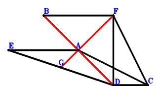
\(\because \) BF//DC and BF=2DC \(\therefore \small\overrightarrow{DB}=- 2 \small\overrightarrow{DC} + \small\overrightarrow{DF}\).\(\because \) EA//DC and EA=2DC \(\therefore \small\overrightarrow{DE}=\small\overrightarrow{DA} - 2 \small\overrightarrow{DC}\).\(\because \) G is the midpoint of ED \(\therefore \small\overrightarrow{DG}=\dfrac{\small\overrightarrow{DE}}{2}=\dfrac{\small\overrightarrow{DA}}{2} - \small\overrightarrow{DC}\).\(\because \) FD⊥DC \( \therefore\small\overrightarrow{DC} \cdot \small\overrightarrow{DF}=0.\)In conclusion, \(\small\overrightarrow{AB} \cdot \small\overrightarrow{DA} + 2 \small\overrightarrow{FA} \cdot \small\overrightarrow{GA}=\small\overrightarrow{DA} \cdot \left(- \small\overrightarrow{DA} + \small\overrightarrow{DB}\right) + 2 \left(\small\overrightarrow{DA} - \small\overrightarrow{DF}\right) \cdot \left(\small\overrightarrow{DA} - \small\overrightarrow{DG}\right)=\small\overrightarrow{DA} \cdot \left(- \small\overrightarrow{DA} - 2 \small\overrightarrow{DC} + \small\overrightarrow{DF}\right) + 2 \left(\dfrac{\small\overrightarrow{DA}}{2} + \small\overrightarrow{DC}\right) \cdot \left(\small\overrightarrow{DA} - \small\overrightarrow{DF}\right)=- 2 \small\overrightarrow{DC} \cdot \small\overrightarrow{DF}=0\)\(\because\) B, A, D are collinear and G, A, F are collinear \(\therefore\) BA\(\cdot\)AD=2\(\cdot\)GA\(\cdot\)AF.
Exercise 158： Let ADCB be a trapezoid with AB//DC and AB=2DC. AGCE is a trapezoid with AG//EC and AG=2EC. E is the midpoint of FD. FD⊥DC. Given that A, D, G are collinear and DB//AF, prove that \(AF·DB=AD·DG\).
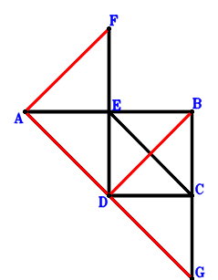
\(\because \) AB//DC and AB=2DC \(\therefore \small\overrightarrow{DB}=\small\overrightarrow{DA} + 2 \small\overrightarrow{DC}\).\(\because \) E is the midpoint of FD \(\therefore \small\overrightarrow{DE}=\dfrac{\small\overrightarrow{DF}}{2}\).\(\because \) AG//EC and AG=2EC \(\therefore \small\overrightarrow{DG}=\small\overrightarrow{DA} + 2 \small\overrightarrow{DC} - 2 \small\overrightarrow{DE}=\small\overrightarrow{DA} + 2 \small\overrightarrow{DC} - \small\overrightarrow{DF}\).\(\because \) FD⊥DC \( \therefore\small\overrightarrow{DC} \cdot \small\overrightarrow{DF}=0.\)In conclusion, \(\small\overrightarrow{DA} \cdot \small\overrightarrow{GD} + \small\overrightarrow{DB} \cdot \small\overrightarrow{FA}=- \small\overrightarrow{DA} \cdot \small\overrightarrow{DG} + \small\overrightarrow{DB} \cdot \left(\small\overrightarrow{DA} - \small\overrightarrow{DF}\right)=- \small\overrightarrow{DA} \cdot \left(\small\overrightarrow{DA} + 2 \small\overrightarrow{DC} - \small\overrightarrow{DF}\right) + \left(\small\overrightarrow{DA} + 2 \small\overrightarrow{DC}\right) \cdot \left(\small\overrightarrow{DA} - \small\overrightarrow{DF}\right)=- 2 \small\overrightarrow{DC} \cdot \small\overrightarrow{DF}=0\)\(\because\) A, D, G are collinear and DB//AF \(\therefore\) \(AF·DB=AD·DG\).
Exercise 199： Let CEGD be a parallelogram. FBDC is a trapezoid with BF//DC and BF=2DC. E is the midpoint of AD. FD⊥DC. Given that B, A, D are collinear and F, A, G are collinear, prove that BA\(\cdot\)AD=2\(\cdot\)AG\(\cdot\)FA.
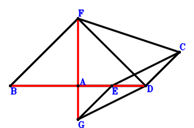
\(\because \) BF//DC and BF=2DC \(\therefore \small\overrightarrow{DB}=- 2 \small\overrightarrow{DC} + \small\overrightarrow{DF}\).\(\because \) E is the midpoint of AD \(\therefore \small\overrightarrow{DE}=\dfrac{\small\overrightarrow{DA}}{2}\).\(\because \) CEGD is a parallelogram \(\therefore \small\overrightarrow{DG}=\dfrac{\small\overrightarrow{DA}}{2} - \small\overrightarrow{DC}\).\(\because \) FD⊥DC \( \therefore\small\overrightarrow{DC} \cdot \small\overrightarrow{DF}=0.\)In conclusion, \(\small\overrightarrow{AB} \cdot \small\overrightarrow{DA} + 2 \small\overrightarrow{FA} \cdot \small\overrightarrow{GA}=\small\overrightarrow{DA} \cdot \left(- \small\overrightarrow{DA} + \small\overrightarrow{DB}\right) + 2 \left(\small\overrightarrow{DA} - \small\overrightarrow{DF}\right) \cdot \left(\small\overrightarrow{DA} - \small\overrightarrow{DG}\right)=\small\overrightarrow{DA} \cdot \left(- \small\overrightarrow{DA} - 2 \small\overrightarrow{DC} + \small\overrightarrow{DF}\right) + 2 \left(\dfrac{\small\overrightarrow{DA}}{2} + \small\overrightarrow{DC}\right) \cdot \left(\small\overrightarrow{DA} - \small\overrightarrow{DF}\right)=- 2 \small\overrightarrow{DC} \cdot \small\overrightarrow{DF}=0\)\(\because\) B, A, D are collinear and F, A, G are collinear \(\therefore\) BA\(\cdot\)AD=2\(\cdot\)AG\(\cdot\)FA.
Exercise 207： Let AECD be a trapezoid with DA//CE and DA=2CE. B, D, A are collinear and BA=3BD. G is the midpoint of FD. CD⊥DF. Given that FA//CB and DA//EG, prove that \(CB·FA=DA·EG\).
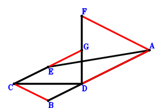
\(\because \) B, D, A are collinear and BA=3BD \(\therefore \small\overrightarrow{DB}=- \dfrac{\small\overrightarrow{DA}}{2}\).\(\because \) DA//CE and DA=2CE \(\therefore \small\overrightarrow{DE}=\dfrac{\small\overrightarrow{DA}}{2} + \small\overrightarrow{DC}\).\(\because \) G is the midpoint of FD \(\therefore \small\overrightarrow{DG}=\dfrac{\small\overrightarrow{DF}}{2}\).\(\because \) CD⊥DF \( \therefore\small\overrightarrow{DC} \cdot \small\overrightarrow{DF}=0.\)In conclusion, \(\small\overrightarrow{BC} \cdot \small\overrightarrow{FA} + \small\overrightarrow{DA} \cdot \small\overrightarrow{EG}=\small\overrightarrow{DA} \cdot \left(- \small\overrightarrow{DE} + \small\overrightarrow{DG}\right) + \left(\small\overrightarrow{DA} - \small\overrightarrow{DF}\right) \cdot \left(- \small\overrightarrow{DB} + \small\overrightarrow{DC}\right)=\small\overrightarrow{DA} \cdot \left(- \dfrac{\small\overrightarrow{DA}}{2} - \small\overrightarrow{DC} + \dfrac{\small\overrightarrow{DF}}{2}\right) + \left(\dfrac{\small\overrightarrow{DA}}{2} + \small\overrightarrow{DC}\right) \cdot \left(\small\overrightarrow{DA} - \small\overrightarrow{DF}\right)=- \small\overrightarrow{DC} \cdot \small\overrightarrow{DF}=0\)\(\because\) FA//CB and DA//EG \(\therefore\) \(CB·FA=DA·EG\).
Exercise 212： Let FEDA be a parallelogram. B, D, A are collinear and BA=3BD. G is the midpoint of ED. CD⊥DF. Given that FA//CB and DA//CG, prove that \(CB·FA=CG·DA\).
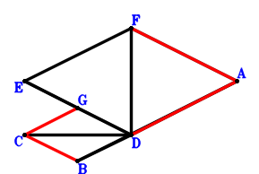
\(\because \) B, D, A are collinear and BA=3BD \(\therefore \small\overrightarrow{DB}=- \dfrac{\small\overrightarrow{DA}}{2}\).\(\because \) FEDA is a parallelogram \(\therefore \small\overrightarrow{DE}=- \small\overrightarrow{DA} + \small\overrightarrow{DF}\).\(\because \) G is the midpoint of ED \(\therefore \small\overrightarrow{DG}=\dfrac{\small\overrightarrow{DE}}{2}=- \dfrac{\small\overrightarrow{DA}}{2} + \dfrac{\small\overrightarrow{DF}}{2}\).\(\because \) CD⊥DF \( \therefore\small\overrightarrow{DC} \cdot \small\overrightarrow{DF}=0.\)In conclusion, \(\small\overrightarrow{BC} \cdot \small\overrightarrow{FA} + \small\overrightarrow{CG} \cdot \small\overrightarrow{DA}=\small\overrightarrow{DA} \cdot \left(- \small\overrightarrow{DC} + \small\overrightarrow{DG}\right) + \left(\small\overrightarrow{DA} - \small\overrightarrow{DF}\right) \cdot \left(- \small\overrightarrow{DB} + \small\overrightarrow{DC}\right)=\small\overrightarrow{DA} \cdot \left(- \dfrac{\small\overrightarrow{DA}}{2} - \small\overrightarrow{DC} + \dfrac{\small\overrightarrow{DF}}{2}\right) + \left(\dfrac{\small\overrightarrow{DA}}{2} + \small\overrightarrow{DC}\right) \cdot \left(\small\overrightarrow{DA} - \small\overrightarrow{DF}\right)=- \small\overrightarrow{DC} \cdot \small\overrightarrow{DF}=0\)\(\because\) FA//CB and DA//CG \(\therefore\) \(CB·FA=CG·DA\).
Exercise 264： Let ADGE be a trapezoid with AD//EG and AD=2EG. ADCB is a trapezoid with AB//DC and AB=2DC. E is the midpoint of FD. FD⊥DC. Given that DB//AF and GC//AD, prove that \(AF·DB=2·AD·GC\).
Exercise 269： Let HAGC be a parallelogram. BEDC is a trapezoid with ED//BC and ED=2BC. G, B are the midpoints of AD, FD, respectively. FD⊥DC. Given that E, A, D are collinear and HD//FA, prove that \(AD·EA=2·FA·HD\).
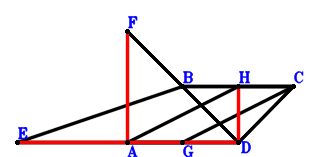
\(\because \) B is the midpoint of FD \(\therefore \small\overrightarrow{DB}=\dfrac{\small\overrightarrow{DF}}{2}\).\(\because \) ED//BC and ED=2BC \(\therefore \small\overrightarrow{DE}=2 \small\overrightarrow{DB} - 2 \small\overrightarrow{DC}=- 2 \small\overrightarrow{DC} + \small\overrightarrow{DF}\).\(\because \) G is the midpoint of AD \(\therefore \small\overrightarrow{DG}=\dfrac{\small\overrightarrow{DA}}{2}\).\(\because \) HAGC is a parallelogram \(\therefore \small\overrightarrow{DH}=\small\overrightarrow{DA} + \small\overrightarrow{DC} - \small\overrightarrow{DG}=\dfrac{\small\overrightarrow{DA}}{2} + \small\overrightarrow{DC}\).\(\because \) FD⊥DC \( \therefore\small\overrightarrow{DC} \cdot \small\overrightarrow{DF}=0.\)In conclusion, \(\small\overrightarrow{AE} \cdot \small\overrightarrow{DA} + 2 \small\overrightarrow{DH} \cdot \small\overrightarrow{FA}=\small\overrightarrow{DA} \cdot \left(- \small\overrightarrow{DA} + \small\overrightarrow{DE}\right) + 2 \small\overrightarrow{DH} \cdot \left(\small\overrightarrow{DA} - \small\overrightarrow{DF}\right)=\small\overrightarrow{DA} \cdot \left(- \small\overrightarrow{DA} - 2 \small\overrightarrow{DC} + \small\overrightarrow{DF}\right) + 2 \left(\dfrac{\small\overrightarrow{DA}}{2} + \small\overrightarrow{DC}\right) \cdot \left(\small\overrightarrow{DA} - \small\overrightarrow{DF}\right)=- 2 \small\overrightarrow{DC} \cdot \small\overrightarrow{DF}=0\)\(\because\) E, A, D are collinear and HD//FA \(\therefore\) \(AD·EA=2·FA·HD\).
Exercise 280： Let FBDA be a parallelogram. D, G, A are collinear and GA=3DG. E, H are the midpoints of BD, CA, respectively. CD⊥DF. Given that DA//CE and FA//HG, prove that \(CE·DA=2·FA·HG\).
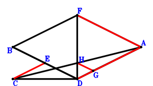
\(\because \) FBDA is a parallelogram \(\therefore \small\overrightarrow{DB}=- \small\overrightarrow{DA} + \small\overrightarrow{DF}\).\(\because \) E is the midpoint of BD \(\therefore \small\overrightarrow{DE}=\dfrac{\small\overrightarrow{DB}}{2}=- \dfrac{\small\overrightarrow{DA}}{2} + \dfrac{\small\overrightarrow{DF}}{2}\).\(\because \) D, G, A are collinear and GA=3DG \(\therefore \small\overrightarrow{DG}=\dfrac{\small\overrightarrow{DA}}{4}\).\(\because \) H is the midpoint of CA \(\therefore \small\overrightarrow{DH}=\dfrac{\small\overrightarrow{DA}}{2} + \dfrac{\small\overrightarrow{DC}}{2}\).\(\because \) CD⊥DF \( \therefore\small\overrightarrow{DC} \cdot \small\overrightarrow{DF}=0.\)In conclusion, \(\small\overrightarrow{CE} \cdot \small\overrightarrow{DA} + 2 \small\overrightarrow{FA} \cdot \small\overrightarrow{GH}=\small\overrightarrow{DA} \cdot \left(- \small\overrightarrow{DC} + \small\overrightarrow{DE}\right) + 2 \left(\small\overrightarrow{DA} - \small\overrightarrow{DF}\right) \cdot \left(- \small\overrightarrow{DG} + \small\overrightarrow{DH}\right)=\small\overrightarrow{DA} \cdot \left(- \dfrac{\small\overrightarrow{DA}}{2} - \small\overrightarrow{DC} + \dfrac{\small\overrightarrow{DF}}{2}\right) + 2 \left(\dfrac{\small\overrightarrow{DA}}{4} + \dfrac{\small\overrightarrow{DC}}{2}\right) \cdot \left(\small\overrightarrow{DA} - \small\overrightarrow{DF}\right)=- \small\overrightarrow{DC} \cdot \small\overrightarrow{DF}=0\)\(\because\) DA//CE and FA//HG \(\therefore\) \(CE·DA=2·FA·HG\).
Exercise 285： Let GADC be a trapezoid with AD//GC and AD=2GC. BAEC is a trapezoid with AE//BC and AE=2BC. B is the midpoint of FD. FD⊥DC. Given that A, D, E are collinear and GD//FA, prove that \(AD·DE=2·FA·GD\).
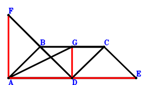
\(\because \) B is the midpoint of FD \(\therefore \small\overrightarrow{DB}=\dfrac{\small\overrightarrow{DF}}{2}\).\(\because \) AE//BC and AE=2BC \(\therefore \small\overrightarrow{DE}=\small\overrightarrow{DA} - 2 \small\overrightarrow{DB} + 2 \small\overrightarrow{DC}=\small\overrightarrow{DA} + 2 \small\overrightarrow{DC} - \small\overrightarrow{DF}\).\(\because \) AD//GC and AD=2GC \(\therefore \small\overrightarrow{DG}=\dfrac{\small\overrightarrow{DA}}{2} + \small\overrightarrow{DC}\).\(\because \) FD⊥DC \( \therefore\small\overrightarrow{DC} \cdot \small\overrightarrow{DF}=0.\)In conclusion, \(\small\overrightarrow{DA} \cdot \small\overrightarrow{ED} + 2 \small\overrightarrow{DG} \cdot \small\overrightarrow{FA}=- \small\overrightarrow{DA} \cdot \small\overrightarrow{DE} + 2 \small\overrightarrow{DG} \cdot \left(\small\overrightarrow{DA} - \small\overrightarrow{DF}\right)=- \small\overrightarrow{DA} \cdot \left(\small\overrightarrow{DA} + 2 \small\overrightarrow{DC} - \small\overrightarrow{DF}\right) + 2 \left(\dfrac{\small\overrightarrow{DA}}{2} + \small\overrightarrow{DC}\right) \cdot \left(\small\overrightarrow{DA} - \small\overrightarrow{DF}\right)=- 2 \small\overrightarrow{DC} \cdot \small\overrightarrow{DF}=0\)\(\because\) A, D, E are collinear and GD//FA \(\therefore\) \(AD·DE=2·FA·GD\).
Exercise 292： Let GDCA be a trapezoid with GA//DC and GA=2DC. ABCE is a trapezoid with AE//BC and AE=2BC. B, H are the midpoints of FD, GD, respectively. AD⊥DE. Given that F, H, A are collinear and F, D, C are collinear, prove that HA\(\cdot\)FA=DC\(\cdot\)FD.
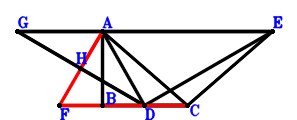
\(\because \) B is the midpoint of FD \(\therefore \small\overrightarrow{DB}=\dfrac{\small\overrightarrow{DF}}{2}\).\(\because \) AE//BC and AE=2BC \(\therefore \small\overrightarrow{DE}=\small\overrightarrow{DA} - 2 \small\overrightarrow{DB} + 2 \small\overrightarrow{DC}=\small\overrightarrow{DA} + 2 \small\overrightarrow{DC} - \small\overrightarrow{DF}\).\(\because \) GA//DC and GA=2DC \(\therefore \small\overrightarrow{DG}=\small\overrightarrow{DA} - 2 \small\overrightarrow{DC}\).\(\because \) H is the midpoint of GD \(\therefore \small\overrightarrow{DH}=\dfrac{\small\overrightarrow{DG}}{2}=\dfrac{\small\overrightarrow{DA}}{2} - \small\overrightarrow{DC}\).\(\because \) AD⊥DE \( \therefore- \small\overrightarrow{DA} \cdot \small\overrightarrow{DE}=- \small\overrightarrow{DA} \cdot \left(\small\overrightarrow{DA} + 2 \small\overrightarrow{DC} - \small\overrightarrow{DF}\right)=- \small\overrightarrow{DA}^{2} - 2 \small\overrightarrow{DA} \cdot \small\overrightarrow{DC} + \small\overrightarrow{DA} \cdot \small\overrightarrow{DF}=0.\)In conclusion, \(\small\overrightarrow{DC} \cdot \small\overrightarrow{DF} + \small\overrightarrow{FA} \cdot \small\overrightarrow{HA}=\small\overrightarrow{DC} \cdot \small\overrightarrow{DF} + \left(\small\overrightarrow{DA} - \small\overrightarrow{DF}\right) \cdot \left(\small\overrightarrow{DA} - \small\overrightarrow{DH}\right)=\small\overrightarrow{DC} \cdot \small\overrightarrow{DF} + \left(\dfrac{\small\overrightarrow{DA}}{2} + \small\overrightarrow{DC}\right) \cdot \left(\small\overrightarrow{DA} - \small\overrightarrow{DF}\right)=\dfrac{\small\overrightarrow{DA}^{2}}{2} + \small\overrightarrow{DA} \cdot \small\overrightarrow{DC} - \dfrac{\small\overrightarrow{DA} \cdot \small\overrightarrow{DF}}{2}=0\)\(\because\) F, H, A are collinear and F, D, C are collinear \(\therefore\) HA\(\cdot\)FA=DC\(\cdot\)FD.
Exercise 297： Let ABCD be a trapezoid with DA//CB and DA=2CB. D, G, A are collinear and GA=3DG. E, G are the midpoints of DF, CH, respectively. DA⊥BE. Given that A, H, F are collinear and C, D, F are collinear, prove that AH\(\cdot\)AF=CD\(\cdot\)DF.
\(\because \) DA//CB and DA=2CB \(\therefore \small\overrightarrow{DB}=\dfrac{\small\overrightarrow{DA}}{2} + \small\overrightarrow{DC}\).\(\because \) E is the midpoint of DF \(\therefore \small\overrightarrow{DE}=\dfrac{\small\overrightarrow{DF}}{2}\).\(\because \) D, G, A are collinear and GA=3DG \(\therefore \small\overrightarrow{DG}=\dfrac{\small\overrightarrow{DA}}{4}\).\(\because \) G is the midpoint of CH \(\therefore \small\overrightarrow{DH}=- \small\overrightarrow{DC} + 2 \small\overrightarrow{DG}=\dfrac{\small\overrightarrow{DA}}{2} - \small\overrightarrow{DC}\).\(\because \) DA⊥BE \( \therefore\small\overrightarrow{BE} \cdot \small\overrightarrow{DA}=\small\overrightarrow{DA} \cdot \left(- \small\overrightarrow{DB} + \small\overrightarrow{DE}\right)=\small\overrightarrow{DA} \cdot \left(- \dfrac{\small\overrightarrow{DA}}{2} - \small\overrightarrow{DC} + \dfrac{\small\overrightarrow{DF}}{2}\right)=- \dfrac{\small\overrightarrow{DA}^{2}}{2} - \small\overrightarrow{DA} \cdot \small\overrightarrow{DC} + \dfrac{\small\overrightarrow{DA} \cdot \small\overrightarrow{DF}}{2}=0.\)In conclusion, \(\small\overrightarrow{DC} \cdot \small\overrightarrow{DF} + \small\overrightarrow{FA} \cdot \small\overrightarrow{HA}=\small\overrightarrow{DC} \cdot \small\overrightarrow{DF} + \left(\small\overrightarrow{DA} - \small\overrightarrow{DF}\right) \cdot \left(\small\overrightarrow{DA} - \small\overrightarrow{DH}\right)=\small\overrightarrow{DC} \cdot \small\overrightarrow{DF} + \left(\dfrac{\small\overrightarrow{DA}}{2} + \small\overrightarrow{DC}\right) \cdot \left(\small\overrightarrow{DA} - \small\overrightarrow{DF}\right)=\dfrac{\small\overrightarrow{DA}^{2}}{2} + \small\overrightarrow{DA} \cdot \small\overrightarrow{DC} - \dfrac{\small\overrightarrow{DA} \cdot \small\overrightarrow{DF}}{2}=0\)\(\because\) A, H, F are collinear and C, D, F are collinear \(\therefore\) AH\(\cdot\)AF=CD\(\cdot\)DF.
Exercise 320： Let CDHG and DBFA be parallelograms. E, G are the midpoints of BD, DA, respectively. DA⊥CE. Given that F, H, A are collinear and C, D, F are collinear, prove that HA\(\cdot\)FA=CD\(\cdot\)DF.
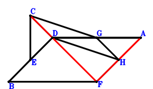
\(\because \) DBFA is a parallelogram \(\therefore \small\overrightarrow{DB}=- \small\overrightarrow{DA} + \small\overrightarrow{DF}\).\(\because \) E is the midpoint of BD \(\therefore \small\overrightarrow{DE}=\dfrac{\small\overrightarrow{DB}}{2}=- \dfrac{\small\overrightarrow{DA}}{2} + \dfrac{\small\overrightarrow{DF}}{2}\).\(\because \) G is the midpoint of DA \(\therefore \small\overrightarrow{DG}=\dfrac{\small\overrightarrow{DA}}{2}\).\(\because \) CDHG is a parallelogram \(\therefore \small\overrightarrow{DH}=\dfrac{\small\overrightarrow{DA}}{2} - \small\overrightarrow{DC}\).\(\because \) DA⊥CE \( \therefore\small\overrightarrow{CE} \cdot \small\overrightarrow{DA}=\small\overrightarrow{DA} \cdot \left(- \small\overrightarrow{DC} + \small\overrightarrow{DE}\right)=\small\overrightarrow{DA} \cdot \left(- \dfrac{\small\overrightarrow{DA}}{2} - \small\overrightarrow{DC} + \dfrac{\small\overrightarrow{DF}}{2}\right)=- \dfrac{\small\overrightarrow{DA}^{2}}{2} - \small\overrightarrow{DA} \cdot \small\overrightarrow{DC} + \dfrac{\small\overrightarrow{DA} \cdot \small\overrightarrow{DF}}{2}=0.\)In conclusion, \(\small\overrightarrow{DC} \cdot \small\overrightarrow{DF} + \small\overrightarrow{FA} \cdot \small\overrightarrow{HA}=\small\overrightarrow{DC} \cdot \small\overrightarrow{DF} + \left(\small\overrightarrow{DA} - \small\overrightarrow{DF}\right) \cdot \left(\small\overrightarrow{DA} - \small\overrightarrow{DH}\right)=\small\overrightarrow{DC} \cdot \small\overrightarrow{DF} + \left(\dfrac{\small\overrightarrow{DA}}{2} + \small\overrightarrow{DC}\right) \cdot \left(\small\overrightarrow{DA} - \small\overrightarrow{DF}\right)=\dfrac{\small\overrightarrow{DA}^{2}}{2} + \small\overrightarrow{DA} \cdot \small\overrightarrow{DC} - \dfrac{\small\overrightarrow{DA} \cdot \small\overrightarrow{DF}}{2}=0\)\(\because\) F, H, A are collinear and C, D, F are collinear \(\therefore\) HA\(\cdot\)FA=CD\(\cdot\)DF.
Exercise 321： Let GCDH be a parallelogram. ADEB is a trapezoid with DA//EB and DA=2EB. B, G are the midpoints of DF, DA, respectively. CE⊥DA. Given that A, H, F are collinear and C, D, F are collinear, prove that AH\(\cdot\)AF=CD\(\cdot\)DF.
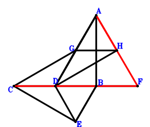
\(\because \) B is the midpoint of DF \(\therefore \small\overrightarrow{DB}=\dfrac{\small\overrightarrow{DF}}{2}\).\(\because \) DA//EB and DA=2EB \(\therefore \small\overrightarrow{DE}=- \dfrac{\small\overrightarrow{DA}}{2} + \dfrac{\small\overrightarrow{DF}}{2}\).\(\because \) G is the midpoint of DA \(\therefore \small\overrightarrow{DG}=\dfrac{\small\overrightarrow{DA}}{2}\).\(\because \) GCDH is a parallelogram \(\therefore \small\overrightarrow{DH}=\dfrac{\small\overrightarrow{DA}}{2} - \small\overrightarrow{DC}\).\(\because \) CE⊥DA \( \therefore\small\overrightarrow{CE} \cdot \small\overrightarrow{DA}=\small\overrightarrow{DA} \cdot \left(- \small\overrightarrow{DC} + \small\overrightarrow{DE}\right)=\small\overrightarrow{DA} \cdot \left(- \dfrac{\small\overrightarrow{DA}}{2} - \small\overrightarrow{DC} + \dfrac{\small\overrightarrow{DF}}{2}\right)=- \dfrac{\small\overrightarrow{DA}^{2}}{2} - \small\overrightarrow{DA} \cdot \small\overrightarrow{DC} + \dfrac{\small\overrightarrow{DA} \cdot \small\overrightarrow{DF}}{2}=0.\)In conclusion, \(\small\overrightarrow{DC} \cdot \small\overrightarrow{DF} + \small\overrightarrow{FA} \cdot \small\overrightarrow{HA}=\small\overrightarrow{DC} \cdot \small\overrightarrow{DF} + \left(\small\overrightarrow{DA} - \small\overrightarrow{DF}\right) \cdot \left(\small\overrightarrow{DA} - \small\overrightarrow{DH}\right)=\small\overrightarrow{DC} \cdot \small\overrightarrow{DF} + \left(\dfrac{\small\overrightarrow{DA}}{2} + \small\overrightarrow{DC}\right) \cdot \left(\small\overrightarrow{DA} - \small\overrightarrow{DF}\right)=\dfrac{\small\overrightarrow{DA}^{2}}{2} + \small\overrightarrow{DA} \cdot \small\overrightarrow{DC} - \dfrac{\small\overrightarrow{DA} \cdot \small\overrightarrow{DF}}{2}=0\)\(\because\) A, H, F are collinear and C, D, F are collinear \(\therefore\) AH\(\cdot\)AF=CD\(\cdot\)DF.
Exercise 327： Let ABCD be a trapezoid with DA//CB and DA=2CB. G, D, A are collinear and GA=3GD. E is the midpoint of DF. DA⊥BE. Given that C, D, F are collinear and AF//CG, prove that \(AF·CG=CD·DF\).
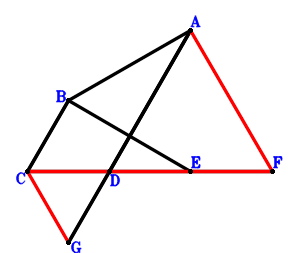
\(\because \) DA//CB and DA=2CB \(\therefore \small\overrightarrow{DB}=\dfrac{\small\overrightarrow{DA}}{2} + \small\overrightarrow{DC}\).\(\because \) E is the midpoint of DF \(\therefore \small\overrightarrow{DE}=\dfrac{\small\overrightarrow{DF}}{2}\).\(\because \) G, D, A are collinear and GA=3GD \(\therefore \small\overrightarrow{DG}=- \dfrac{\small\overrightarrow{DA}}{2}\).\(\because \) DA⊥BE \( \therefore\small\overrightarrow{BE} \cdot \small\overrightarrow{DA}=\small\overrightarrow{DA} \cdot \left(- \small\overrightarrow{DB} + \small\overrightarrow{DE}\right)=\small\overrightarrow{DA} \cdot \left(- \dfrac{\small\overrightarrow{DA}}{2} - \small\overrightarrow{DC} + \dfrac{\small\overrightarrow{DF}}{2}\right)=- \dfrac{\small\overrightarrow{DA}^{2}}{2} - \small\overrightarrow{DA} \cdot \small\overrightarrow{DC} + \dfrac{\small\overrightarrow{DA} \cdot \small\overrightarrow{DF}}{2}=0.\)In conclusion, \(\small\overrightarrow{DC} \cdot \small\overrightarrow{DF} + \small\overrightarrow{FA} \cdot \small\overrightarrow{GC}=\small\overrightarrow{DC} \cdot \small\overrightarrow{DF} + \left(\small\overrightarrow{DA} - \small\overrightarrow{DF}\right) \cdot \left(\small\overrightarrow{DC} - \small\overrightarrow{DG}\right)=\small\overrightarrow{DC} \cdot \small\overrightarrow{DF} + \left(\dfrac{\small\overrightarrow{DA}}{2} + \small\overrightarrow{DC}\right) \cdot \left(\small\overrightarrow{DA} - \small\overrightarrow{DF}\right)=\dfrac{\small\overrightarrow{DA}^{2}}{2} + \small\overrightarrow{DA} \cdot \small\overrightarrow{DC} - \dfrac{\small\overrightarrow{DA} \cdot \small\overrightarrow{DF}}{2}=0\)\(\because\) C, D, F are collinear and AF//CG \(\therefore\) \(AF·CG=CD·DF\).
Exercise 349： Let BFAD be a trapezoid with FA//BD and FA=2BD. D, E, A are collinear and EA=3DE. G is the midpoint of CA. BC⊥DA. Given that F, D, C are collinear and FA//EG, prove that \(DC·FD=2·EG·FA\).
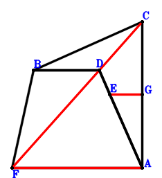
\(\because \) FA//BD and FA=2BD \(\therefore \small\overrightarrow{AB}=\small\overrightarrow{AD} + \dfrac{\small\overrightarrow{AF}}{2}\).\(\because \) D, E, A are collinear and EA=3DE \(\therefore \small\overrightarrow{AE}=\dfrac{3 \small\overrightarrow{AD}}{4}\).\(\because \) G is the midpoint of CA \(\therefore \small\overrightarrow{AG}=\dfrac{\small\overrightarrow{AC}}{2}\).\(\because \) BC⊥DA \( \therefore\small\overrightarrow{CB} \cdot \small\overrightarrow{DA}=- \small\overrightarrow{AD} \cdot \left(\small\overrightarrow{AB} - \small\overrightarrow{AC}\right)=- \small\overrightarrow{AD} \cdot \left(- \small\overrightarrow{AC} + \small\overrightarrow{AD} + \dfrac{\small\overrightarrow{AF}}{2}\right)=\small\overrightarrow{AC} \cdot \small\overrightarrow{AD} - \small\overrightarrow{AD}^{2} - \dfrac{\small\overrightarrow{AD} \cdot \small\overrightarrow{AF}}{2}=0.\)In conclusion, \(\small\overrightarrow{DC} \cdot \small\overrightarrow{DF} + 2 \small\overrightarrow{EG} \cdot \small\overrightarrow{FA}=- 2 \small\overrightarrow{AF} \cdot \left(- \small\overrightarrow{AE} + \small\overrightarrow{AG}\right) + \left(\small\overrightarrow{AC} - \small\overrightarrow{AD}\right) \cdot \left(- \small\overrightarrow{AD} + \small\overrightarrow{AF}\right)=- 2 \small\overrightarrow{AF} \cdot \left(\dfrac{\small\overrightarrow{AC}}{2} - \dfrac{3 \small\overrightarrow{AD}}{4}\right) + \left(\small\overrightarrow{AC} - \small\overrightarrow{AD}\right) \cdot \left(- \small\overrightarrow{AD} + \small\overrightarrow{AF}\right)=- \small\overrightarrow{AC} \cdot \small\overrightarrow{AD} + \small\overrightarrow{AD}^{2} + \dfrac{\small\overrightarrow{AD} \cdot \small\overrightarrow{AF}}{2}=0\)\(\because\) F, D, C are collinear and FA//EG \(\therefore\) \(DC·FD=2·EG·FA\).
Exercise 370： Let ADBF be a parallelogram. E, G are the midpoints of DB, DA, respectively. H is the midpoint of CA and ID. DA⊥CE. Given that C, D, F are collinear and IG//AF, prove that \(AF·IG=CD·DF\).
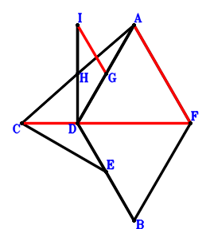
\(\because \) ADBF is a parallelogram \(\therefore \small\overrightarrow{DB}=- \small\overrightarrow{DA} + \small\overrightarrow{DF}\).\(\because \) E is the midpoint of DB \(\therefore \small\overrightarrow{DE}=\dfrac{\small\overrightarrow{DB}}{2}=- \dfrac{\small\overrightarrow{DA}}{2} + \dfrac{\small\overrightarrow{DF}}{2}\).\(\because \) G is the midpoint of DA \(\therefore \small\overrightarrow{DG}=\dfrac{\small\overrightarrow{DA}}{2}\).\(\because \) H is the midpoint of CA \(\therefore \small\overrightarrow{DH}=\dfrac{\small\overrightarrow{DA}}{2} + \dfrac{\small\overrightarrow{DC}}{2}\).\(\because \) H is the midpoint of ID \(\therefore \small\overrightarrow{DI}=2 \small\overrightarrow{DH}=\small\overrightarrow{DA} + \small\overrightarrow{DC}\).\(\because \) DA⊥CE \( \therefore\small\overrightarrow{CE} \cdot \small\overrightarrow{DA}=\small\overrightarrow{DA} \cdot \left(- \small\overrightarrow{DC} + \small\overrightarrow{DE}\right)=\small\overrightarrow{DA} \cdot \left(- \dfrac{\small\overrightarrow{DA}}{2} - \small\overrightarrow{DC} + \dfrac{\small\overrightarrow{DF}}{2}\right)=- \dfrac{\small\overrightarrow{DA}^{2}}{2} - \small\overrightarrow{DA} \cdot \small\overrightarrow{DC} + \dfrac{\small\overrightarrow{DA} \cdot \small\overrightarrow{DF}}{2}=0.\)In conclusion, \(\small\overrightarrow{DC} \cdot \small\overrightarrow{DF} + \small\overrightarrow{FA} \cdot \small\overrightarrow{GI}=\small\overrightarrow{DC} \cdot \small\overrightarrow{DF} + \left(\small\overrightarrow{DA} - \small\overrightarrow{DF}\right) \cdot \left(- \small\overrightarrow{DG} + \small\overrightarrow{DI}\right)=\small\overrightarrow{DC} \cdot \small\overrightarrow{DF} + \left(\dfrac{\small\overrightarrow{DA}}{2} + \small\overrightarrow{DC}\right) \cdot \left(\small\overrightarrow{DA} - \small\overrightarrow{DF}\right)=\dfrac{\small\overrightarrow{DA}^{2}}{2} + \small\overrightarrow{DA} \cdot \small\overrightarrow{DC} - \dfrac{\small\overrightarrow{DA} \cdot \small\overrightarrow{DF}}{2}=0\)\(\because\) C, D, F are collinear and IG//AF \(\therefore\) \(AF·IG=CD·DF\).
Exercise 398： Let ADCB be a trapezoid with AB//DC and AB=2DC. FB⊥AD. Given that F, D, C are collinear and DB//FA, prove that \(DB·FA=2·DC·FD\).
Exercise 419： Let GCDA be a parallelogram. ADBF is a trapezoid with AF//DB and AF=2DB. E is the midpoint of DA. CB⊥DA. Given that C, D, F are collinear and GE//AF, prove that \(AF·GE=CD·DF\).
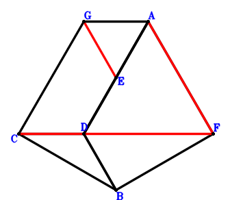
\(\because \) AF//DB and AF=2DB \(\therefore \small\overrightarrow{DB}=- \dfrac{\small\overrightarrow{DA}}{2} + \dfrac{\small\overrightarrow{DF}}{2}\).\(\because \) E is the midpoint of DA \(\therefore \small\overrightarrow{DE}=\dfrac{\small\overrightarrow{DA}}{2}\).\(\because \) GCDA is a parallelogram \(\therefore \small\overrightarrow{DG}=\small\overrightarrow{DA} + \small\overrightarrow{DC}\).\(\because \) CB⊥DA \( \therefore\small\overrightarrow{CB} \cdot \small\overrightarrow{DA}=\small\overrightarrow{DA} \cdot \left(\small\overrightarrow{DB} - \small\overrightarrow{DC}\right)=\small\overrightarrow{DA} \cdot \left(- \dfrac{\small\overrightarrow{DA}}{2} - \small\overrightarrow{DC} + \dfrac{\small\overrightarrow{DF}}{2}\right)=- \dfrac{\small\overrightarrow{DA}^{2}}{2} - \small\overrightarrow{DA} \cdot \small\overrightarrow{DC} + \dfrac{\small\overrightarrow{DA} \cdot \small\overrightarrow{DF}}{2}=0.\)In conclusion, \(\small\overrightarrow{DC} \cdot \small\overrightarrow{DF} + \small\overrightarrow{EG} \cdot \small\overrightarrow{FA}=\small\overrightarrow{DC} \cdot \small\overrightarrow{DF} + \left(\small\overrightarrow{DA} - \small\overrightarrow{DF}\right) \cdot \left(- \small\overrightarrow{DE} + \small\overrightarrow{DG}\right)=\small\overrightarrow{DC} \cdot \small\overrightarrow{DF} + \left(\dfrac{\small\overrightarrow{DA}}{2} + \small\overrightarrow{DC}\right) \cdot \left(\small\overrightarrow{DA} - \small\overrightarrow{DF}\right)=\dfrac{\small\overrightarrow{DA}^{2}}{2} + \small\overrightarrow{DA} \cdot \small\overrightarrow{DC} - \dfrac{\small\overrightarrow{DA} \cdot \small\overrightarrow{DF}}{2}=0\)\(\because\) C, D, F are collinear and GE//AF \(\therefore\) \(AF·GE=CD·DF\).
Exercise 427： Let ABCG be a parallelogram. ABCD is a trapezoid with DA//CB and DA=2CB. E, G are the midpoints of DF, DA, respectively. DA⊥BE. Given that C, D, F are collinear and BD//AF, prove that \(AF·BD=CD·DF\).
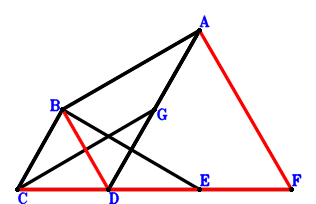
\(\because \) DA//CB and DA=2CB \(\therefore \small\overrightarrow{DB}=\dfrac{\small\overrightarrow{DA}}{2} + \small\overrightarrow{DC}\).\(\because \) E is the midpoint of DF \(\therefore \small\overrightarrow{DE}=\dfrac{\small\overrightarrow{DF}}{2}\).\(\because \) G is the midpoint of DA \(\therefore \small\overrightarrow{DG}=\dfrac{\small\overrightarrow{DA}}{2}\).\(\because \) ABCG is a parallelogram \( \therefore\small\overrightarrow{BE} \cdot \small\overrightarrow{DA}=\small\overrightarrow{DA} \cdot \left(- \small\overrightarrow{DB} + \small\overrightarrow{DE}\right)=\small\overrightarrow{DA} \cdot \left(- \dfrac{\small\overrightarrow{DA}}{2} - \small\overrightarrow{DC} + \dfrac{\small\overrightarrow{DF}}{2}\right)=- \dfrac{\small\overrightarrow{DA}^{2}}{2} - \small\overrightarrow{DA} \cdot \small\overrightarrow{DC} + \dfrac{\small\overrightarrow{DA} \cdot \small\overrightarrow{DF}}{2}=0.\)In conclusion, \(\small\overrightarrow{DB} \cdot \small\overrightarrow{FA} + \small\overrightarrow{DC} \cdot \small\overrightarrow{DF}=\small\overrightarrow{DB} \cdot \left(\small\overrightarrow{DA} - \small\overrightarrow{DF}\right) + \small\overrightarrow{DC} \cdot \small\overrightarrow{DF}=\small\overrightarrow{DC} \cdot \small\overrightarrow{DF} + \left(\dfrac{\small\overrightarrow{DA}}{2} + \small\overrightarrow{DC}\right) \cdot \left(\small\overrightarrow{DA} - \small\overrightarrow{DF}\right)=\dfrac{\small\overrightarrow{DA}^{2}}{2} + \small\overrightarrow{DA} \cdot \small\overrightarrow{DC} - \dfrac{\small\overrightarrow{DA} \cdot \small\overrightarrow{DF}}{2}=0\)\(\because\) C, D, F are collinear and BD//AF \(\therefore\) \(AF·BD=CD·DF\).
Exercise 431： Let AHCG be a parallelogram. ADEB is a trapezoid with DA//EB and DA=2EB. B, G are the midpoints of DF, DA, respectively. CE⊥DA. Given that C, D, F are collinear and HD//AF, prove that \(AF·HD=CD·DF\).
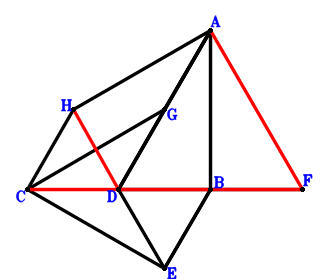
\(\because \) B is the midpoint of DF \(\therefore \small\overrightarrow{DB}=\dfrac{\small\overrightarrow{DF}}{2}\).\(\because \) DA//EB and DA=2EB \(\therefore \small\overrightarrow{DE}=- \dfrac{\small\overrightarrow{DA}}{2} + \dfrac{\small\overrightarrow{DF}}{2}\).\(\because \) G is the midpoint of DA \(\therefore \small\overrightarrow{DG}=\dfrac{\small\overrightarrow{DA}}{2}\).\(\because \) AHCG is a parallelogram \(\therefore \small\overrightarrow{DH}=\small\overrightarrow{DA} + \small\overrightarrow{DC} - \small\overrightarrow{DG}=\dfrac{\small\overrightarrow{DA}}{2} + \small\overrightarrow{DC}\).\(\because \) CE⊥DA \( \therefore\small\overrightarrow{CE} \cdot \small\overrightarrow{DA}=\small\overrightarrow{DA} \cdot \left(- \small\overrightarrow{DC} + \small\overrightarrow{DE}\right)=\small\overrightarrow{DA} \cdot \left(- \dfrac{\small\overrightarrow{DA}}{2} - \small\overrightarrow{DC} + \dfrac{\small\overrightarrow{DF}}{2}\right)=- \dfrac{\small\overrightarrow{DA}^{2}}{2} - \small\overrightarrow{DA} \cdot \small\overrightarrow{DC} + \dfrac{\small\overrightarrow{DA} \cdot \small\overrightarrow{DF}}{2}=0.\)In conclusion, \(\small\overrightarrow{DC} \cdot \small\overrightarrow{DF} + \small\overrightarrow{DH} \cdot \small\overrightarrow{FA}=\small\overrightarrow{DC} \cdot \small\overrightarrow{DF} + \small\overrightarrow{DH} \cdot \left(\small\overrightarrow{DA} - \small\overrightarrow{DF}\right)=\small\overrightarrow{DC} \cdot \small\overrightarrow{DF} + \left(\dfrac{\small\overrightarrow{DA}}{2} + \small\overrightarrow{DC}\right) \cdot \left(\small\overrightarrow{DA} - \small\overrightarrow{DF}\right)=\dfrac{\small\overrightarrow{DA}^{2}}{2} + \small\overrightarrow{DA} \cdot \small\overrightarrow{DC} - \dfrac{\small\overrightarrow{DA} \cdot \small\overrightarrow{DF}}{2}=0\)\(\because\) C, D, F are collinear and HD//AF \(\therefore\) \(AF·HD=CD·DF\).
Exercise 432： Let AHCG be a parallelogram. ECBA is a trapezoid with EA//CB and EA=2CB. B, G are the midpoints of DF, DA, respectively. ED⊥DA. Given that C, D, F are collinear and HD//AF, prove that \(AF·HD=CD·DF\).
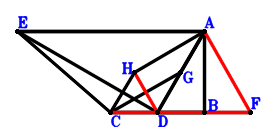
\(\because \) B is the midpoint of DF \(\therefore \small\overrightarrow{DB}=\dfrac{\small\overrightarrow{DF}}{2}\).\(\because \) EA//CB and EA=2CB \(\therefore \small\overrightarrow{DE}=\small\overrightarrow{DA} - 2 \small\overrightarrow{DB} + 2 \small\overrightarrow{DC}=\small\overrightarrow{DA} + 2 \small\overrightarrow{DC} - \small\overrightarrow{DF}\).\(\because \) G is the midpoint of DA \(\therefore \small\overrightarrow{DG}=\dfrac{\small\overrightarrow{DA}}{2}\).\(\because \) AHCG is a parallelogram \(\therefore \small\overrightarrow{DH}=\small\overrightarrow{DA} + \small\overrightarrow{DC} - \small\overrightarrow{DG}=\dfrac{\small\overrightarrow{DA}}{2} + \small\overrightarrow{DC}\).\(\because \) ED⊥DA \( \therefore- \small\overrightarrow{DA} \cdot \small\overrightarrow{DE}=- \small\overrightarrow{DA} \cdot \left(\small\overrightarrow{DA} + 2 \small\overrightarrow{DC} - \small\overrightarrow{DF}\right)=- \small\overrightarrow{DA}^{2} - 2 \small\overrightarrow{DA} \cdot \small\overrightarrow{DC} + \small\overrightarrow{DA} \cdot \small\overrightarrow{DF}=0.\)In conclusion, \(\small\overrightarrow{DC} \cdot \small\overrightarrow{DF} + \small\overrightarrow{DH} \cdot \small\overrightarrow{FA}=\small\overrightarrow{DC} \cdot \small\overrightarrow{DF} + \small\overrightarrow{DH} \cdot \left(\small\overrightarrow{DA} - \small\overrightarrow{DF}\right)=\small\overrightarrow{DC} \cdot \small\overrightarrow{DF} + \left(\dfrac{\small\overrightarrow{DA}}{2} + \small\overrightarrow{DC}\right) \cdot \left(\small\overrightarrow{DA} - \small\overrightarrow{DF}\right)=\dfrac{\small\overrightarrow{DA}^{2}}{2} + \small\overrightarrow{DA} \cdot \small\overrightarrow{DC} - \dfrac{\small\overrightarrow{DA} \cdot \small\overrightarrow{DF}}{2}=0\)\(\because\) C, D, F are collinear and HD//AF \(\therefore\) \(AF·HD=CD·DF\).
Exercise 434： Let AECG be a parallelogram. AFCB is a trapezoid with FA//CB and FA=2CB. E is the midpoint of AD. AD⊥DB. Given that F, D, C are collinear and DG//FA, prove that \(DG·FA=DC·FD\).
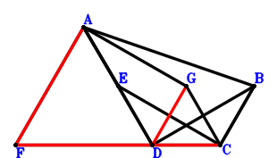
\(\because \) FA//CB and FA=2CB \(\therefore \small\overrightarrow{DB}=\dfrac{\small\overrightarrow{DA}}{2} + \small\overrightarrow{DC} - \dfrac{\small\overrightarrow{DF}}{2}\).\(\because \) E is the midpoint of AD \(\therefore \small\overrightarrow{DE}=\dfrac{\small\overrightarrow{DA}}{2}\).\(\because \) AECG is a parallelogram \(\therefore \small\overrightarrow{DG}=\small\overrightarrow{DA} + \small\overrightarrow{DC} - \small\overrightarrow{DE}=\dfrac{\small\overrightarrow{DA}}{2} + \small\overrightarrow{DC}\).\(\because \) AD⊥DB \( \therefore- \small\overrightarrow{DA} \cdot \small\overrightarrow{DB}=- \small\overrightarrow{DA} \cdot \left(\dfrac{\small\overrightarrow{DA}}{2} + \small\overrightarrow{DC} - \dfrac{\small\overrightarrow{DF}}{2}\right)=- \dfrac{\small\overrightarrow{DA}^{2}}{2} - \small\overrightarrow{DA} \cdot \small\overrightarrow{DC} + \dfrac{\small\overrightarrow{DA} \cdot \small\overrightarrow{DF}}{2}=0.\)In conclusion, \(\small\overrightarrow{DC} \cdot \small\overrightarrow{DF} + \small\overrightarrow{DG} \cdot \small\overrightarrow{FA}=\small\overrightarrow{DC} \cdot \small\overrightarrow{DF} + \small\overrightarrow{DG} \cdot \left(\small\overrightarrow{DA} - \small\overrightarrow{DF}\right)=\small\overrightarrow{DC} \cdot \small\overrightarrow{DF} + \left(\dfrac{\small\overrightarrow{DA}}{2} + \small\overrightarrow{DC}\right) \cdot \left(\small\overrightarrow{DA} - \small\overrightarrow{DF}\right)=\dfrac{\small\overrightarrow{DA}^{2}}{2} + \small\overrightarrow{DA} \cdot \small\overrightarrow{DC} - \dfrac{\small\overrightarrow{DA} \cdot \small\overrightarrow{DF}}{2}=0\)\(\because\) F, D, C are collinear and DG//FA \(\therefore\) \(DG·FA=DC·FD\).
Exercise 529： Let AGCD be a trapezoid with AD//GC and AD=2GC. A, B, D are collinear and AB=3BD. E, H are the midpoints of AC, FD, respectively. AF⊥EB and CD⊥DF. Prove that AD⊥GH.
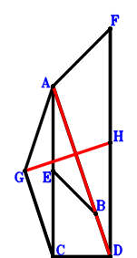
\(\because \) A, B, D are collinear and AB=3BD \(\therefore \small\overrightarrow{DB}=\dfrac{\small\overrightarrow{DA}}{4}\).\(\because \) E is the midpoint of AC \(\therefore \small\overrightarrow{DE}=\dfrac{\small\overrightarrow{DA}}{2} + \dfrac{\small\overrightarrow{DC}}{2}\).\(\because \) AD//GC and AD=2GC \(\therefore \small\overrightarrow{DG}=\dfrac{\small\overrightarrow{DA}}{2} + \small\overrightarrow{DC}\).\(\because \) H is the midpoint of FD \(\therefore \small\overrightarrow{DH}=\dfrac{\small\overrightarrow{DF}}{2}\).\(\because \) CD⊥DF \(\therefore \small\overrightarrow{DC} \cdot \small\overrightarrow{DF}=0\) . . . . . . \(①\)\(\because \) AF⊥EB \(\therefore \small\overrightarrow{BE} \cdot \small\overrightarrow{FA}=\left(\small\overrightarrow{DA} - \small\overrightarrow{DF}\right) \cdot \left(- \small\overrightarrow{DB} + \small\overrightarrow{DE}\right)=\left(\dfrac{\small\overrightarrow{DA}}{4} + \dfrac{\small\overrightarrow{DC}}{2}\right) \cdot \left(\small\overrightarrow{DA} - \small\overrightarrow{DF}\right)=\dfrac{\small\overrightarrow{DA}^{2}}{4} + \dfrac{\small\overrightarrow{DA} \cdot \small\overrightarrow{DC}}{2} - \dfrac{\small\overrightarrow{DA} \cdot \small\overrightarrow{DF}}{4} - \dfrac{\small\overrightarrow{DC} \cdot \small\overrightarrow{DF}}{2}=0\) . . . . . . \(②\)In conclusion, \(\small\overrightarrow{DA} \cdot \small\overrightarrow{GH}=\small\overrightarrow{DA} \cdot \left(- \small\overrightarrow{DG} + \small\overrightarrow{DH}\right)=\small\overrightarrow{DA} \cdot \left(- \dfrac{\small\overrightarrow{DA}}{2} - \small\overrightarrow{DC} + \dfrac{\small\overrightarrow{DF}}{2}\right)=- \dfrac{\small\overrightarrow{DA}^{2}}{2} - \small\overrightarrow{DA} \cdot \small\overrightarrow{DC} + \dfrac{\small\overrightarrow{DA} \cdot \small\overrightarrow{DF}}{2}=-①-2\cdot②=0\), that is, AD⊥GH.
Exercise 533： Let G, E be the midpoints of AD, FD, respectively. H is the midpoint of AC and BG. AD⊥BE and CD⊥DF. Prove that BD⊥AF.
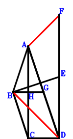
\(\because \) AD//BC and AD=2BC \(\therefore \small\overrightarrow{DB}=\dfrac{\small\overrightarrow{DA}}{2} + \small\overrightarrow{DC}\).\(\because \) E is the midpoint of FD \(\therefore \small\overrightarrow{DE}=\dfrac{\small\overrightarrow{DF}}{2}\).\(\because \) G is the midpoint of AD \(\therefore \small\overrightarrow{DG}=\dfrac{\small\overrightarrow{DA}}{2}\).\(\because \) H is the midpoint of AC \(\therefore \small\overrightarrow{DH}=\dfrac{\small\overrightarrow{DA}}{2} + \dfrac{\small\overrightarrow{DC}}{2}\).\(\because \) H is the midpoint of BG \(\therefore \small\overrightarrow{DC} \cdot \small\overrightarrow{DF}=0\) . . . . . . \(①\)\(\because \) CD⊥DF \(\therefore \small\overrightarrow{BE} \cdot \small\overrightarrow{DA}=\small\overrightarrow{DA} \cdot \left(- \small\overrightarrow{DB} + \small\overrightarrow{DE}\right)=\small\overrightarrow{DA} \cdot \left(- \dfrac{\small\overrightarrow{DA}}{2} - \small\overrightarrow{DC} + \dfrac{\small\overrightarrow{DF}}{2}\right)=- \dfrac{\small\overrightarrow{DA}^{2}}{2} - \small\overrightarrow{DA} \cdot \small\overrightarrow{DC} + \dfrac{\small\overrightarrow{DA} \cdot \small\overrightarrow{DF}}{2}=0\) . . . . . . \(②\)In conclusion, \(\small\overrightarrow{DB} \cdot \small\overrightarrow{FA}=\small\overrightarrow{DB} \cdot \left(\small\overrightarrow{DA} - \small\overrightarrow{DF}\right)=\left(\dfrac{\small\overrightarrow{DA}}{2} + \small\overrightarrow{DC}\right) \cdot \left(\small\overrightarrow{DA} - \small\overrightarrow{DF}\right)=\dfrac{\small\overrightarrow{DA}^{2}}{2} + \small\overrightarrow{DA} \cdot \small\overrightarrow{DC} - \dfrac{\small\overrightarrow{DA} \cdot \small\overrightarrow{DF}}{2} - \small\overrightarrow{DC} \cdot \small\overrightarrow{DF}=-①-②=0\), that is, BD⊥AF.
Exercise 534： Let BCDA be a trapezoid with BA//CD and BA=2CD. AECD is a trapezoid with AD//EC and AD=2EC. G is the midpoint of FD. BD⊥AF and CD⊥DF. Prove that AD⊥EG.
Exercise 537： Let ABCG be a parallelogram. E, G are the midpoints of FD, AD, respectively. AD⊥BE and CD⊥DF. Prove that BD⊥AF.
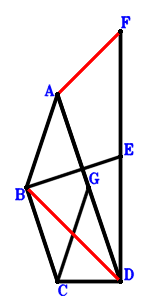
\(\because \) AD//BC and AD=2BC \(\therefore \small\overrightarrow{DB}=\dfrac{\small\overrightarrow{DA}}{2} + \small\overrightarrow{DC}\).\(\because \) E is the midpoint of FD \(\therefore \small\overrightarrow{DE}=\dfrac{\small\overrightarrow{DF}}{2}\).\(\because \) G is the midpoint of AD \(\therefore \small\overrightarrow{DG}=\dfrac{\small\overrightarrow{DA}}{2}\).\(\because \) ABCG is a parallelogram \(\therefore \small\overrightarrow{DC} \cdot \small\overrightarrow{DF}=0\) . . . . . . \(①\)\(\because \) CD⊥DF \(\therefore \small\overrightarrow{BE} \cdot \small\overrightarrow{DA}=\small\overrightarrow{DA} \cdot \left(- \small\overrightarrow{DB} + \small\overrightarrow{DE}\right)=\small\overrightarrow{DA} \cdot \left(- \dfrac{\small\overrightarrow{DA}}{2} - \small\overrightarrow{DC} + \dfrac{\small\overrightarrow{DF}}{2}\right)=- \dfrac{\small\overrightarrow{DA}^{2}}{2} - \small\overrightarrow{DA} \cdot \small\overrightarrow{DC} + \dfrac{\small\overrightarrow{DA} \cdot \small\overrightarrow{DF}}{2}=0\) . . . . . . \(②\)In conclusion, \(\small\overrightarrow{DB} \cdot \small\overrightarrow{FA}=\small\overrightarrow{DB} \cdot \left(\small\overrightarrow{DA} - \small\overrightarrow{DF}\right)=\left(\dfrac{\small\overrightarrow{DA}}{2} + \small\overrightarrow{DC}\right) \cdot \left(\small\overrightarrow{DA} - \small\overrightarrow{DF}\right)=\dfrac{\small\overrightarrow{DA}^{2}}{2} + \small\overrightarrow{DA} \cdot \small\overrightarrow{DC} - \dfrac{\small\overrightarrow{DA} \cdot \small\overrightarrow{DF}}{2} - \small\overrightarrow{DC} \cdot \small\overrightarrow{DF}=-①-②=0\), that is, BD⊥AF.
Exercise 538： Let AGCD be a trapezoid with AD//GC and AD=2GC. ACDB is a trapezoid with AB//CD and AB=2CD. E, H are the midpoints of DB, FD, respectively. FA⊥AE and CD⊥DF. Prove that AD⊥GH.
\(\because \) AB//CD and AB=2CD \(\therefore \small\overrightarrow{DB}=\small\overrightarrow{DA} - 2 \small\overrightarrow{DC}\).\(\because \) E is the midpoint of DB \(\therefore \small\overrightarrow{DE}=\dfrac{\small\overrightarrow{DB}}{2}=\dfrac{\small\overrightarrow{DA}}{2} - \small\overrightarrow{DC}\).\(\because \) AD//GC and AD=2GC \(\therefore \small\overrightarrow{DG}=\dfrac{\small\overrightarrow{DA}}{2} + \small\overrightarrow{DC}\).\(\because \) H is the midpoint of FD \(\therefore \small\overrightarrow{DH}=\dfrac{\small\overrightarrow{DF}}{2}\).\(\because \) CD⊥DF \(\therefore \small\overrightarrow{DC} \cdot \small\overrightarrow{DF}=0\) . . . . . . \(①\)\(\because \) FA⊥AE \(\therefore \small\overrightarrow{EA} \cdot \small\overrightarrow{FA}=\left(\small\overrightarrow{DA} - \small\overrightarrow{DE}\right) \cdot \left(\small\overrightarrow{DA} - \small\overrightarrow{DF}\right)=\left(\dfrac{\small\overrightarrow{DA}}{2} + \small\overrightarrow{DC}\right) \cdot \left(\small\overrightarrow{DA} - \small\overrightarrow{DF}\right)=\dfrac{\small\overrightarrow{DA}^{2}}{2} + \small\overrightarrow{DA} \cdot \small\overrightarrow{DC} - \dfrac{\small\overrightarrow{DA} \cdot \small\overrightarrow{DF}}{2} - \small\overrightarrow{DC} \cdot \small\overrightarrow{DF}=0\) . . . . . . \(②\)In conclusion, \(\small\overrightarrow{DA} \cdot \small\overrightarrow{GH}=\small\overrightarrow{DA} \cdot \left(- \small\overrightarrow{DG} + \small\overrightarrow{DH}\right)=\small\overrightarrow{DA} \cdot \left(- \dfrac{\small\overrightarrow{DA}}{2} - \small\overrightarrow{DC} + \dfrac{\small\overrightarrow{DF}}{2}\right)=- \dfrac{\small\overrightarrow{DA}^{2}}{2} - \small\overrightarrow{DA} \cdot \small\overrightarrow{DC} + \dfrac{\small\overrightarrow{DA} \cdot \small\overrightarrow{DF}}{2}=-①-②=0\), that is, AD⊥GH.
Exercise 539： Let AGCD be a trapezoid with AD//GC and AD=2GC. A, B, D are collinear and AB=3BD. H, B are the midpoints of FD, CE, respectively. FA⊥AE and CD⊥DF. Prove that AD⊥GH.
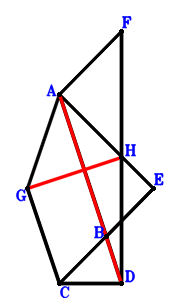
\(\because \) A, B, D are collinear and AB=3BD \(\therefore \small\overrightarrow{DB}=\dfrac{\small\overrightarrow{DA}}{4}\).\(\because \) B is the midpoint of CE \(\therefore \small\overrightarrow{DE}=2 \small\overrightarrow{DB} - \small\overrightarrow{DC}=\dfrac{\small\overrightarrow{DA}}{2} - \small\overrightarrow{DC}\).\(\because \) AD//GC and AD=2GC \(\therefore \small\overrightarrow{DG}=\dfrac{\small\overrightarrow{DA}}{2} + \small\overrightarrow{DC}\).\(\because \) H is the midpoint of FD \(\therefore \small\overrightarrow{DH}=\dfrac{\small\overrightarrow{DF}}{2}\).\(\because \) CD⊥DF \(\therefore \small\overrightarrow{DC} \cdot \small\overrightarrow{DF}=0\) . . . . . . \(①\)\(\because \) FA⊥AE \(\therefore \small\overrightarrow{EA} \cdot \small\overrightarrow{FA}=\left(\small\overrightarrow{DA} - \small\overrightarrow{DE}\right) \cdot \left(\small\overrightarrow{DA} - \small\overrightarrow{DF}\right)=\left(\dfrac{\small\overrightarrow{DA}}{2} + \small\overrightarrow{DC}\right) \cdot \left(\small\overrightarrow{DA} - \small\overrightarrow{DF}\right)=\dfrac{\small\overrightarrow{DA}^{2}}{2} + \small\overrightarrow{DA} \cdot \small\overrightarrow{DC} - \dfrac{\small\overrightarrow{DA} \cdot \small\overrightarrow{DF}}{2} - \small\overrightarrow{DC} \cdot \small\overrightarrow{DF}=0\) . . . . . . \(②\)In conclusion, \(\small\overrightarrow{DA} \cdot \small\overrightarrow{GH}=\small\overrightarrow{DA} \cdot \left(- \small\overrightarrow{DG} + \small\overrightarrow{DH}\right)=\small\overrightarrow{DA} \cdot \left(- \dfrac{\small\overrightarrow{DA}}{2} - \small\overrightarrow{DC} + \dfrac{\small\overrightarrow{DF}}{2}\right)=- \dfrac{\small\overrightarrow{DA}^{2}}{2} - \small\overrightarrow{DA} \cdot \small\overrightarrow{DC} + \dfrac{\small\overrightarrow{DA} \cdot \small\overrightarrow{DF}}{2}=-①-②=0\), that is, AD⊥GH.
Exercise 544： Let GCDA be a trapezoid with GA//CD and GA=2CD. A, B, D are collinear and AB=3BD. E is the midpoint of AC. AF⊥EB and CD⊥DF. Prove that GF⊥AD.
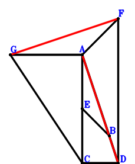
\(\because \) A, B, D are collinear and AB=3BD \(\therefore \small\overrightarrow{DB}=\dfrac{\small\overrightarrow{DA}}{4}\).\(\because \) E is the midpoint of AC \(\therefore \small\overrightarrow{DE}=\dfrac{\small\overrightarrow{DA}}{2} + \dfrac{\small\overrightarrow{DC}}{2}\).\(\because \) GA//CD and GA=2CD \(\therefore \small\overrightarrow{DG}=\small\overrightarrow{DA} + 2 \small\overrightarrow{DC}\).\(\because \) CD⊥DF \(\therefore \small\overrightarrow{DC} \cdot \small\overrightarrow{DF}=0\) . . . . . . \(①\)\(\because \) AF⊥EB \(\therefore \small\overrightarrow{BE} \cdot \small\overrightarrow{FA}=\left(\small\overrightarrow{DA} - \small\overrightarrow{DF}\right) \cdot \left(- \small\overrightarrow{DB} + \small\overrightarrow{DE}\right)=\left(\dfrac{\small\overrightarrow{DA}}{4} + \dfrac{\small\overrightarrow{DC}}{2}\right) \cdot \left(\small\overrightarrow{DA} - \small\overrightarrow{DF}\right)=\dfrac{\small\overrightarrow{DA}^{2}}{4} + \dfrac{\small\overrightarrow{DA} \cdot \small\overrightarrow{DC}}{2} - \dfrac{\small\overrightarrow{DA} \cdot \small\overrightarrow{DF}}{4} - \dfrac{\small\overrightarrow{DC} \cdot \small\overrightarrow{DF}}{2}=0\) . . . . . . \(②\)In conclusion, \(\small\overrightarrow{DA} \cdot \small\overrightarrow{GF}=\small\overrightarrow{DA} \cdot \left(\small\overrightarrow{DF} - \small\overrightarrow{DG}\right)=\small\overrightarrow{DA} \cdot \left(- \small\overrightarrow{DA} - 2 \small\overrightarrow{DC} + \small\overrightarrow{DF}\right)=- \small\overrightarrow{DA}^{2} - 2 \small\overrightarrow{DA} \cdot \small\overrightarrow{DC} + \small\overrightarrow{DA} \cdot \small\overrightarrow{DF}=-2\cdot①-4\cdot②=0\), that is, GF⊥AD.
Exercise 546： Let BCDA be a trapezoid with BA//CD and BA=2CD. E is the midpoint of AD. G is the midpoint of AC and HD. BF⊥AD and CD⊥DF. Prove that HE⊥AF.
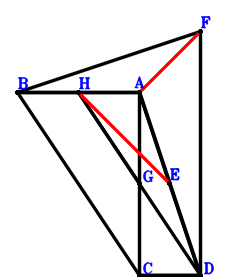
\(\because \) BA//CD and BA=2CD \(\therefore \small\overrightarrow{DB}=\small\overrightarrow{DA} + 2 \small\overrightarrow{DC}\).\(\because \) E is the midpoint of AD \(\therefore \small\overrightarrow{DE}=\dfrac{\small\overrightarrow{DA}}{2}\).\(\because \) G is the midpoint of AC \(\therefore \small\overrightarrow{DG}=\dfrac{\small\overrightarrow{DA}}{2} + \dfrac{\small\overrightarrow{DC}}{2}\).\(\because \) G is the midpoint of HD \(\therefore \small\overrightarrow{DH}=2 \small\overrightarrow{DG}=\small\overrightarrow{DA} + \small\overrightarrow{DC}\).\(\because \) CD⊥DF \(\therefore \small\overrightarrow{DC} \cdot \small\overrightarrow{DF}=0\) . . . . . . \(①\)\(\because \) BF⊥AD \(\therefore \small\overrightarrow{BF} \cdot \small\overrightarrow{DA}=\small\overrightarrow{DA} \cdot \left(- \small\overrightarrow{DB} + \small\overrightarrow{DF}\right)=\small\overrightarrow{DA} \cdot \left(- \small\overrightarrow{DA} - 2 \small\overrightarrow{DC} + \small\overrightarrow{DF}\right)=- \small\overrightarrow{DA}^{2} - 2 \small\overrightarrow{DA} \cdot \small\overrightarrow{DC} + \small\overrightarrow{DA} \cdot \small\overrightarrow{DF}=0\) . . . . . . \(②\)In conclusion, \(\small\overrightarrow{EH} \cdot \small\overrightarrow{FA}=\left(\small\overrightarrow{DA} - \small\overrightarrow{DF}\right) \cdot \left(- \small\overrightarrow{DE} + \small\overrightarrow{DH}\right)=\left(\dfrac{\small\overrightarrow{DA}}{2} + \small\overrightarrow{DC}\right) \cdot \left(\small\overrightarrow{DA} - \small\overrightarrow{DF}\right)=\dfrac{\small\overrightarrow{DA}^{2}}{2} + \small\overrightarrow{DA} \cdot \small\overrightarrow{DC} - \dfrac{\small\overrightarrow{DA} \cdot \small\overrightarrow{DF}}{2} - \small\overrightarrow{DC} \cdot \small\overrightarrow{DF}=-①-1/2\cdot②=0\), that is, HE⊥AF.
Exercise 553： Let GCDA be a trapezoid with GA//CD and GA=2CD. ACDB is a trapezoid with AB//CD and AB=2CD. E is the midpoint of DB. FA⊥AE and CD⊥DF. Prove that GF⊥AD.
Exercise 569： Let AFGD be a trapezoid with FA//GD and FA=2GD. D, B, A are collinear and BA=3DB. B is the midpoint of CE. FA⊥AE and CD⊥DF. Prove that CG⊥DA.
Exercise 572： Let EFAD be a parallelogram. A, D, B are collinear and AB=3DB. G is the midpoint of DE. AF⊥CB and FD⊥DC. Prove that AD⊥CG.
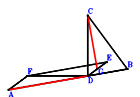
\(\because \) A, D, B are collinear and AB=3DB \(\therefore \small\overrightarrow{DB}=- \dfrac{\small\overrightarrow{DA}}{2}\).\(\because \) EFAD is a parallelogram \(\therefore \small\overrightarrow{DE}=- \small\overrightarrow{DA} + \small\overrightarrow{DF}\).\(\because \) G is the midpoint of DE \(\therefore \small\overrightarrow{DG}=\dfrac{\small\overrightarrow{DE}}{2}=- \dfrac{\small\overrightarrow{DA}}{2} + \dfrac{\small\overrightarrow{DF}}{2}\).\(\because \) FD⊥DC \(\therefore \small\overrightarrow{DC} \cdot \small\overrightarrow{DF}=0\) . . . . . . \(①\)\(\because \) AF⊥CB \(\therefore \small\overrightarrow{BC} \cdot \small\overrightarrow{FA}=\left(\small\overrightarrow{DA} - \small\overrightarrow{DF}\right) \cdot \left(- \small\overrightarrow{DB} + \small\overrightarrow{DC}\right)=\left(\dfrac{\small\overrightarrow{DA}}{2} + \small\overrightarrow{DC}\right) \cdot \left(\small\overrightarrow{DA} - \small\overrightarrow{DF}\right)=\dfrac{\small\overrightarrow{DA}^{2}}{2} + \small\overrightarrow{DA} \cdot \small\overrightarrow{DC} - \dfrac{\small\overrightarrow{DA} \cdot \small\overrightarrow{DF}}{2} - \small\overrightarrow{DC} \cdot \small\overrightarrow{DF}=0\) . . . . . . \(②\)In conclusion, \(\small\overrightarrow{CG} \cdot \small\overrightarrow{DA}=\small\overrightarrow{DA} \cdot \left(- \small\overrightarrow{DC} + \small\overrightarrow{DG}\right)=\small\overrightarrow{DA} \cdot \left(- \dfrac{\small\overrightarrow{DA}}{2} - \small\overrightarrow{DC} + \dfrac{\small\overrightarrow{DF}}{2}\right)=- \dfrac{\small\overrightarrow{DA}^{2}}{2} - \small\overrightarrow{DA} \cdot \small\overrightarrow{DC} + \dfrac{\small\overrightarrow{DA} \cdot \small\overrightarrow{DF}}{2}=-①-②=0\), that is, AD⊥CG.
Exercise 578： Let DBFA be a parallelogram. E, G are the midpoints of BD, DA, respectively. H is the midpoint of IG and CA. DA⊥CE and CD⊥DF. Prove that ID⊥FA.
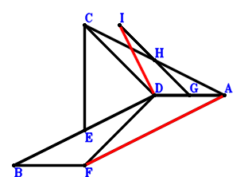
\(\because \) DBFA is a parallelogram \(\therefore \small\overrightarrow{DB}=- \small\overrightarrow{DA} + \small\overrightarrow{DF}\).\(\because \) E is the midpoint of BD \(\therefore \small\overrightarrow{DE}=\dfrac{\small\overrightarrow{DB}}{2}=- \dfrac{\small\overrightarrow{DA}}{2} + \dfrac{\small\overrightarrow{DF}}{2}\).\(\because \) G is the midpoint of DA \(\therefore \small\overrightarrow{DG}=\dfrac{\small\overrightarrow{DA}}{2}\).\(\because \) H is the midpoint of CA \(\therefore \small\overrightarrow{DH}=\dfrac{\small\overrightarrow{DA}}{2} + \dfrac{\small\overrightarrow{DC}}{2}\).\(\because \) H is the midpoint of IG \(\therefore \small\overrightarrow{DI}=\small\overrightarrow{DA} + \small\overrightarrow{DC} - \small\overrightarrow{DG}=\dfrac{\small\overrightarrow{DA}}{2} + \small\overrightarrow{DC}\).\(\because \) CD⊥DF \(\therefore \small\overrightarrow{DC} \cdot \small\overrightarrow{DF}=0\) . . . . . . \(①\)\(\because \) DA⊥CE \(\therefore \small\overrightarrow{CE} \cdot \small\overrightarrow{DA}=\small\overrightarrow{DA} \cdot \left(- \small\overrightarrow{DC} + \small\overrightarrow{DE}\right)=\small\overrightarrow{DA} \cdot \left(- \dfrac{\small\overrightarrow{DA}}{2} - \small\overrightarrow{DC} + \dfrac{\small\overrightarrow{DF}}{2}\right)=- \dfrac{\small\overrightarrow{DA}^{2}}{2} - \small\overrightarrow{DA} \cdot \small\overrightarrow{DC} + \dfrac{\small\overrightarrow{DA} \cdot \small\overrightarrow{DF}}{2}=0\) . . . . . . \(②\)In conclusion, \(\small\overrightarrow{DI} \cdot \small\overrightarrow{FA}=\small\overrightarrow{DI} \cdot \left(\small\overrightarrow{DA} - \small\overrightarrow{DF}\right)=\left(\dfrac{\small\overrightarrow{DA}}{2} + \small\overrightarrow{DC}\right) \cdot \left(\small\overrightarrow{DA} - \small\overrightarrow{DF}\right)=\dfrac{\small\overrightarrow{DA}^{2}}{2} + \small\overrightarrow{DA} \cdot \small\overrightarrow{DC} - \dfrac{\small\overrightarrow{DA} \cdot \small\overrightarrow{DF}}{2} - \small\overrightarrow{DC} \cdot \small\overrightarrow{DF}=-①-②=0\), that is, ID⊥FA.
Exercise 579： Let FADE be a parallelogram. BCDA is a trapezoid with BA//CD and BA=2CD. G is the midpoint of DE. BD⊥AF and CD⊥DF. Prove that AD⊥CG.
Exercise 582： Let DBFA and CGAH be parallelograms. E, G are the midpoints of BD, DA, respectively. DA⊥CE and CD⊥DF. Prove that HD⊥FA.
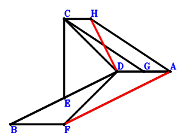
\(\because \) DBFA is a parallelogram \(\therefore \small\overrightarrow{DB}=- \small\overrightarrow{DA} + \small\overrightarrow{DF}\).\(\because \) E is the midpoint of BD \(\therefore \small\overrightarrow{DE}=\dfrac{\small\overrightarrow{DB}}{2}=- \dfrac{\small\overrightarrow{DA}}{2} + \dfrac{\small\overrightarrow{DF}}{2}\).\(\because \) G is the midpoint of DA \(\therefore \small\overrightarrow{DG}=\dfrac{\small\overrightarrow{DA}}{2}\).\(\because \) CGAH is a parallelogram \(\therefore \small\overrightarrow{DH}=\small\overrightarrow{DA} + \small\overrightarrow{DC} - \small\overrightarrow{DG}=\dfrac{\small\overrightarrow{DA}}{2} + \small\overrightarrow{DC}\).\(\because \) CD⊥DF \(\therefore \small\overrightarrow{DC} \cdot \small\overrightarrow{DF}=0\) . . . . . . \(①\)\(\because \) DA⊥CE \(\therefore \small\overrightarrow{CE} \cdot \small\overrightarrow{DA}=\small\overrightarrow{DA} \cdot \left(- \small\overrightarrow{DC} + \small\overrightarrow{DE}\right)=\small\overrightarrow{DA} \cdot \left(- \dfrac{\small\overrightarrow{DA}}{2} - \small\overrightarrow{DC} + \dfrac{\small\overrightarrow{DF}}{2}\right)=- \dfrac{\small\overrightarrow{DA}^{2}}{2} - \small\overrightarrow{DA} \cdot \small\overrightarrow{DC} + \dfrac{\small\overrightarrow{DA} \cdot \small\overrightarrow{DF}}{2}=0\) . . . . . . \(②\)In conclusion, \(\small\overrightarrow{DH} \cdot \small\overrightarrow{FA}=\small\overrightarrow{DH} \cdot \left(\small\overrightarrow{DA} - \small\overrightarrow{DF}\right)=\left(\dfrac{\small\overrightarrow{DA}}{2} + \small\overrightarrow{DC}\right) \cdot \left(\small\overrightarrow{DA} - \small\overrightarrow{DF}\right)=\dfrac{\small\overrightarrow{DA}^{2}}{2} + \small\overrightarrow{DA} \cdot \small\overrightarrow{DC} - \dfrac{\small\overrightarrow{DA} \cdot \small\overrightarrow{DF}}{2} - \small\overrightarrow{DC} \cdot \small\overrightarrow{DF}=-①-②=0\), that is, HD⊥FA.
Exercise 583： Let FADG be a parallelogram. ACDB is a trapezoid with AB//CD and AB=2CD. E, H are the midpoints of DB, DG, respectively. FA⊥AE and CD⊥DF. Prove that AD⊥CH.
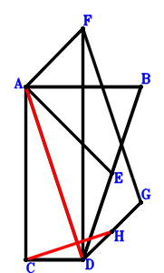
\(\because \) AB//CD and AB=2CD \(\therefore \small\overrightarrow{DB}=\small\overrightarrow{DA} - 2 \small\overrightarrow{DC}\).\(\because \) E is the midpoint of DB \(\therefore \small\overrightarrow{DE}=\dfrac{\small\overrightarrow{DB}}{2}=\dfrac{\small\overrightarrow{DA}}{2} - \small\overrightarrow{DC}\).\(\because \) FADG is a parallelogram \(\therefore \small\overrightarrow{DG}=- \small\overrightarrow{DA} + \small\overrightarrow{DF}\).\(\because \) H is the midpoint of DG \(\therefore \small\overrightarrow{DH}=\dfrac{\small\overrightarrow{DG}}{2}=- \dfrac{\small\overrightarrow{DA}}{2} + \dfrac{\small\overrightarrow{DF}}{2}\).\(\because \) CD⊥DF \(\therefore \small\overrightarrow{DC} \cdot \small\overrightarrow{DF}=0\) . . . . . . \(①\)\(\because \) FA⊥AE \(\therefore \small\overrightarrow{EA} \cdot \small\overrightarrow{FA}=\left(\small\overrightarrow{DA} - \small\overrightarrow{DE}\right) \cdot \left(\small\overrightarrow{DA} - \small\overrightarrow{DF}\right)=\left(\dfrac{\small\overrightarrow{DA}}{2} + \small\overrightarrow{DC}\right) \cdot \left(\small\overrightarrow{DA} - \small\overrightarrow{DF}\right)=\dfrac{\small\overrightarrow{DA}^{2}}{2} + \small\overrightarrow{DA} \cdot \small\overrightarrow{DC} - \dfrac{\small\overrightarrow{DA} \cdot \small\overrightarrow{DF}}{2} - \small\overrightarrow{DC} \cdot \small\overrightarrow{DF}=0\) . . . . . . \(②\)In conclusion, \(\small\overrightarrow{CH} \cdot \small\overrightarrow{DA}=\small\overrightarrow{DA} \cdot \left(- \small\overrightarrow{DC} + \small\overrightarrow{DH}\right)=\small\overrightarrow{DA} \cdot \left(- \dfrac{\small\overrightarrow{DA}}{2} - \small\overrightarrow{DC} + \dfrac{\small\overrightarrow{DF}}{2}\right)=- \dfrac{\small\overrightarrow{DA}^{2}}{2} - \small\overrightarrow{DA} \cdot \small\overrightarrow{DC} + \dfrac{\small\overrightarrow{DA} \cdot \small\overrightarrow{DF}}{2}=-①-②=0\), that is, AD⊥CH.
Exercise 586： Let CDEB and DGFA be parallelograms. B, H are the midpoints of DA, GD, respectively. FA⊥AE and CD⊥DF. Prove that DA⊥CH.
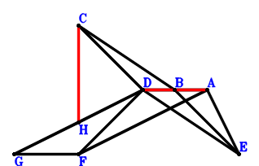
\(\because \) B is the midpoint of DA \(\therefore \small\overrightarrow{DB}=\dfrac{\small\overrightarrow{DA}}{2}\).\(\because \) CDEB is a parallelogram \(\therefore \small\overrightarrow{DE}=\dfrac{\small\overrightarrow{DA}}{2} - \small\overrightarrow{DC}\).\(\because \) DGFA is a parallelogram \(\therefore \small\overrightarrow{DG}=- \small\overrightarrow{DA} + \small\overrightarrow{DF}\).\(\because \) H is the midpoint of GD \(\therefore \small\overrightarrow{DH}=\dfrac{\small\overrightarrow{DG}}{2}=- \dfrac{\small\overrightarrow{DA}}{2} + \dfrac{\small\overrightarrow{DF}}{2}\).\(\because \) CD⊥DF \(\therefore \small\overrightarrow{DC} \cdot \small\overrightarrow{DF}=0\) . . . . . . \(①\)\(\because \) FA⊥AE \(\therefore \small\overrightarrow{EA} \cdot \small\overrightarrow{FA}=\left(\small\overrightarrow{DA} - \small\overrightarrow{DE}\right) \cdot \left(\small\overrightarrow{DA} - \small\overrightarrow{DF}\right)=\left(\dfrac{\small\overrightarrow{DA}}{2} + \small\overrightarrow{DC}\right) \cdot \left(\small\overrightarrow{DA} - \small\overrightarrow{DF}\right)=\dfrac{\small\overrightarrow{DA}^{2}}{2} + \small\overrightarrow{DA} \cdot \small\overrightarrow{DC} - \dfrac{\small\overrightarrow{DA} \cdot \small\overrightarrow{DF}}{2} - \small\overrightarrow{DC} \cdot \small\overrightarrow{DF}=0\) . . . . . . \(②\)In conclusion, \(\small\overrightarrow{CH} \cdot \small\overrightarrow{DA}=\small\overrightarrow{DA} \cdot \left(- \small\overrightarrow{DC} + \small\overrightarrow{DH}\right)=\small\overrightarrow{DA} \cdot \left(- \dfrac{\small\overrightarrow{DA}}{2} - \small\overrightarrow{DC} + \dfrac{\small\overrightarrow{DF}}{2}\right)=- \dfrac{\small\overrightarrow{DA}^{2}}{2} - \small\overrightarrow{DA} \cdot \small\overrightarrow{DC} + \dfrac{\small\overrightarrow{DA} \cdot \small\overrightarrow{DF}}{2}=-①-②=0\), that is, DA⊥CH.
Exercise 594： Let BCDA be a trapezoid with BA//CD and BA=2CD. ADGE is a trapezoid with AD//EG and AD=2EG. E is the midpoint of FD. BD⊥AF and CD⊥DF. Prove that CG⊥AD.
Exercise 596： Let HCDA be a parallelogram. ADEB is a trapezoid with AD//BE and AD=2BE. B, G are the midpoints of FD, AD, respectively. CE⊥AD and CD⊥DF. Prove that HG⊥AF.
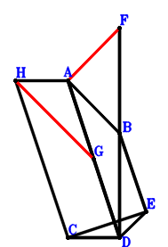
\(\because \) B is the midpoint of FD \(\therefore \small\overrightarrow{DB}=\dfrac{\small\overrightarrow{DF}}{2}\).\(\because \) AD//BE and AD=2BE \(\therefore \small\overrightarrow{DE}=- \dfrac{\small\overrightarrow{DA}}{2} + \dfrac{\small\overrightarrow{DF}}{2}\).\(\because \) G is the midpoint of AD \(\therefore \small\overrightarrow{DG}=\dfrac{\small\overrightarrow{DA}}{2}\).\(\because \) HCDA is a parallelogram \(\therefore \small\overrightarrow{DH}=\small\overrightarrow{DA} + \small\overrightarrow{DC}\).\(\because \) CD⊥DF \(\therefore \small\overrightarrow{DC} \cdot \small\overrightarrow{DF}=0\) . . . . . . \(①\)\(\because \) CE⊥AD \(\therefore \small\overrightarrow{CE} \cdot \small\overrightarrow{DA}=\small\overrightarrow{DA} \cdot \left(- \small\overrightarrow{DC} + \small\overrightarrow{DE}\right)=\small\overrightarrow{DA} \cdot \left(- \dfrac{\small\overrightarrow{DA}}{2} - \small\overrightarrow{DC} + \dfrac{\small\overrightarrow{DF}}{2}\right)=- \dfrac{\small\overrightarrow{DA}^{2}}{2} - \small\overrightarrow{DA} \cdot \small\overrightarrow{DC} + \dfrac{\small\overrightarrow{DA} \cdot \small\overrightarrow{DF}}{2}=0\) . . . . . . \(②\)In conclusion, \(\small\overrightarrow{FA} \cdot \small\overrightarrow{GH}=\left(\small\overrightarrow{DA} - \small\overrightarrow{DF}\right) \cdot \left(- \small\overrightarrow{DG} + \small\overrightarrow{DH}\right)=\left(\dfrac{\small\overrightarrow{DA}}{2} + \small\overrightarrow{DC}\right) \cdot \left(\small\overrightarrow{DA} - \small\overrightarrow{DF}\right)=\dfrac{\small\overrightarrow{DA}^{2}}{2} + \small\overrightarrow{DA} \cdot \small\overrightarrow{DC} - \dfrac{\small\overrightarrow{DA} \cdot \small\overrightarrow{DF}}{2} - \small\overrightarrow{DC} \cdot \small\overrightarrow{DF}=-①-②=0\), that is, HG⊥AF.
Exercise 598： Let ADHG be a trapezoid with AD//GH and AD=2GH. ACDB is a trapezoid with AB//CD and AB=2CD. E, G are the midpoints of DB, FD, respectively. FA⊥AE and CD⊥DF. Prove that CH⊥AD.
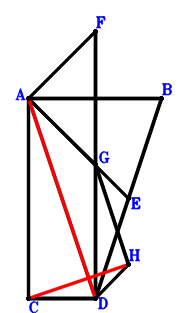
\(\because \) AB//CD and AB=2CD \(\therefore \small\overrightarrow{DB}=\small\overrightarrow{DA} - 2 \small\overrightarrow{DC}\).\(\because \) E is the midpoint of DB \(\therefore \small\overrightarrow{DE}=\dfrac{\small\overrightarrow{DB}}{2}=\dfrac{\small\overrightarrow{DA}}{2} - \small\overrightarrow{DC}\).\(\because \) G is the midpoint of FD \(\therefore \small\overrightarrow{DG}=\dfrac{\small\overrightarrow{DF}}{2}\).\(\because \) AD//GH and AD=2GH \(\therefore \small\overrightarrow{DH}=- \dfrac{\small\overrightarrow{DA}}{2} + \dfrac{\small\overrightarrow{DF}}{2}\).\(\because \) CD⊥DF \(\therefore \small\overrightarrow{DC} \cdot \small\overrightarrow{DF}=0\) . . . . . . \(①\)\(\because \) FA⊥AE \(\therefore \small\overrightarrow{EA} \cdot \small\overrightarrow{FA}=\left(\small\overrightarrow{DA} - \small\overrightarrow{DE}\right) \cdot \left(\small\overrightarrow{DA} - \small\overrightarrow{DF}\right)=\left(\dfrac{\small\overrightarrow{DA}}{2} + \small\overrightarrow{DC}\right) \cdot \left(\small\overrightarrow{DA} - \small\overrightarrow{DF}\right)=\dfrac{\small\overrightarrow{DA}^{2}}{2} + \small\overrightarrow{DA} \cdot \small\overrightarrow{DC} - \dfrac{\small\overrightarrow{DA} \cdot \small\overrightarrow{DF}}{2} - \small\overrightarrow{DC} \cdot \small\overrightarrow{DF}=0\) . . . . . . \(②\)In conclusion, \(\small\overrightarrow{CH} \cdot \small\overrightarrow{DA}=\small\overrightarrow{DA} \cdot \left(- \small\overrightarrow{DC} + \small\overrightarrow{DH}\right)=\small\overrightarrow{DA} \cdot \left(- \dfrac{\small\overrightarrow{DA}}{2} - \small\overrightarrow{DC} + \dfrac{\small\overrightarrow{DF}}{2}\right)=- \dfrac{\small\overrightarrow{DA}^{2}}{2} - \small\overrightarrow{DA} \cdot \small\overrightarrow{DC} + \dfrac{\small\overrightarrow{DA} \cdot \small\overrightarrow{DF}}{2}=-①-②=0\), that is, CH⊥AD.
Exercise 599： Let HDAG be a trapezoid with DA//HG and DA=2HG. D, B, A are collinear and BA=3DB. B, G are the midpoints of CE, FD, respectively. FA⊥AE and CD⊥DF. Prove that CH⊥DA.
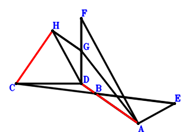
\(\because \) D, B, A are collinear and BA=3DB \(\therefore \small\overrightarrow{DB}=\dfrac{\small\overrightarrow{DA}}{4}\).\(\because \) B is the midpoint of CE \(\therefore \small\overrightarrow{DE}=2 \small\overrightarrow{DB} - \small\overrightarrow{DC}=\dfrac{\small\overrightarrow{DA}}{2} - \small\overrightarrow{DC}\).\(\because \) G is the midpoint of FD \(\therefore \small\overrightarrow{DG}=\dfrac{\small\overrightarrow{DF}}{2}\).\(\because \) DA//HG and DA=2HG \(\therefore \small\overrightarrow{DH}=- \dfrac{\small\overrightarrow{DA}}{2} + \dfrac{\small\overrightarrow{DF}}{2}\).\(\because \) CD⊥DF \(\therefore \small\overrightarrow{DC} \cdot \small\overrightarrow{DF}=0\) . . . . . . \(①\)\(\because \) FA⊥AE \(\therefore \small\overrightarrow{EA} \cdot \small\overrightarrow{FA}=\left(\small\overrightarrow{DA} - \small\overrightarrow{DE}\right) \cdot \left(\small\overrightarrow{DA} - \small\overrightarrow{DF}\right)=\left(\dfrac{\small\overrightarrow{DA}}{2} + \small\overrightarrow{DC}\right) \cdot \left(\small\overrightarrow{DA} - \small\overrightarrow{DF}\right)=\dfrac{\small\overrightarrow{DA}^{2}}{2} + \small\overrightarrow{DA} \cdot \small\overrightarrow{DC} - \dfrac{\small\overrightarrow{DA} \cdot \small\overrightarrow{DF}}{2} - \small\overrightarrow{DC} \cdot \small\overrightarrow{DF}=0\) . . . . . . \(②\)In conclusion, \(\small\overrightarrow{CH} \cdot \small\overrightarrow{DA}=\small\overrightarrow{DA} \cdot \left(- \small\overrightarrow{DC} + \small\overrightarrow{DH}\right)=\small\overrightarrow{DA} \cdot \left(- \dfrac{\small\overrightarrow{DA}}{2} - \small\overrightarrow{DC} + \dfrac{\small\overrightarrow{DF}}{2}\right)=- \dfrac{\small\overrightarrow{DA}^{2}}{2} - \small\overrightarrow{DA} \cdot \small\overrightarrow{DC} + \dfrac{\small\overrightarrow{DA} \cdot \small\overrightarrow{DF}}{2}=-①-②=0\), that is, CH⊥DA.
Exercise 602： Let EABC be a trapezoid with EA//CB and EA=2CB. A, D, G are collinear and AG=3DG. B is the midpoint of FD. ED⊥DA and CD⊥DF. Prove that FA⊥CG.
Exercise 611： Let HCDA be a parallelogram. AECB is a trapezoid with EA//CB and EA=2CB. B, G are the midpoints of FD, AD, respectively. ED⊥DA and CD⊥DF. Prove that HG⊥AF.
\(\because \) B is the midpoint of FD \(\therefore \small\overrightarrow{DB}=\dfrac{\small\overrightarrow{DF}}{2}\).\(\because \) EA//CB and EA=2CB \(\therefore \small\overrightarrow{DE}=\small\overrightarrow{DA} - 2 \small\overrightarrow{DB} + 2 \small\overrightarrow{DC}=\small\overrightarrow{DA} + 2 \small\overrightarrow{DC} - \small\overrightarrow{DF}\).\(\because \) G is the midpoint of AD \(\therefore \small\overrightarrow{DG}=\dfrac{\small\overrightarrow{DA}}{2}\).\(\because \) HCDA is a parallelogram \(\therefore \small\overrightarrow{DH}=\small\overrightarrow{DA} + \small\overrightarrow{DC}\).\(\because \) CD⊥DF \(\therefore \small\overrightarrow{DC} \cdot \small\overrightarrow{DF}=0\) . . . . . . \(①\)\(\because \) ED⊥DA \(\therefore - \small\overrightarrow{DA} \cdot \small\overrightarrow{DE}=- \small\overrightarrow{DA} \cdot \left(\small\overrightarrow{DA} + 2 \small\overrightarrow{DC} - \small\overrightarrow{DF}\right)=- \small\overrightarrow{DA}^{2} - 2 \small\overrightarrow{DA} \cdot \small\overrightarrow{DC} + \small\overrightarrow{DA} \cdot \small\overrightarrow{DF}=0\) . . . . . . \(②\)In conclusion, \(\small\overrightarrow{FA} \cdot \small\overrightarrow{GH}=\left(\small\overrightarrow{DA} - \small\overrightarrow{DF}\right) \cdot \left(- \small\overrightarrow{DG} + \small\overrightarrow{DH}\right)=\left(\dfrac{\small\overrightarrow{DA}}{2} + \small\overrightarrow{DC}\right) \cdot \left(\small\overrightarrow{DA} - \small\overrightarrow{DF}\right)=\dfrac{\small\overrightarrow{DA}^{2}}{2} + \small\overrightarrow{DA} \cdot \small\overrightarrow{DC} - \dfrac{\small\overrightarrow{DA} \cdot \small\overrightarrow{DF}}{2} - \small\overrightarrow{DC} \cdot \small\overrightarrow{DF}=-①-1/2\cdot②=0\), that is, HG⊥AF.
Exercise 613： Let AECB be a trapezoid with EA//CB and EA=2CB. ACDG is a trapezoid with AG//CD and AG=2CD. B, H are the midpoints of FD, DG, respectively. ED⊥DA and CD⊥DF. Prove that FA⊥AH.
Exercise 621： Let EBCD be a trapezoid with DE//CB and DE=2CB. B, G are the midpoints of FD, AD, respectively. H is the midpoint of AC and ID. DA⊥AE and CD⊥DF. Prove that IG⊥AF.
\(\because \) B is the midpoint of FD \(\therefore \small\overrightarrow{DB}=\dfrac{\small\overrightarrow{DF}}{2}\).\(\because \) DE//CB and DE=2CB \(\therefore \small\overrightarrow{DE}=2 \small\overrightarrow{DB} - 2 \small\overrightarrow{DC}=- 2 \small\overrightarrow{DC} + \small\overrightarrow{DF}\).\(\because \) G is the midpoint of AD \(\therefore \small\overrightarrow{DG}=\dfrac{\small\overrightarrow{DA}}{2}\).\(\because \) H is the midpoint of AC \(\therefore \small\overrightarrow{DH}=\dfrac{\small\overrightarrow{DA}}{2} + \dfrac{\small\overrightarrow{DC}}{2}\).\(\because \) H is the midpoint of ID \(\therefore \small\overrightarrow{DI}=2 \small\overrightarrow{DH}=\small\overrightarrow{DA} + \small\overrightarrow{DC}\).\(\because \) CD⊥DF \(\therefore \small\overrightarrow{DC} \cdot \small\overrightarrow{DF}=0\) . . . . . . \(①\)\(\because \) DA⊥AE \(\therefore \small\overrightarrow{AE} \cdot \small\overrightarrow{DA}=\small\overrightarrow{DA} \cdot \left(- \small\overrightarrow{DA} + \small\overrightarrow{DE}\right)=\small\overrightarrow{DA} \cdot \left(- \small\overrightarrow{DA} - 2 \small\overrightarrow{DC} + \small\overrightarrow{DF}\right)=- \small\overrightarrow{DA}^{2} - 2 \small\overrightarrow{DA} \cdot \small\overrightarrow{DC} + \small\overrightarrow{DA} \cdot \small\overrightarrow{DF}=0\) . . . . . . \(②\)In conclusion, \(\small\overrightarrow{FA} \cdot \small\overrightarrow{GI}=\left(\small\overrightarrow{DA} - \small\overrightarrow{DF}\right) \cdot \left(- \small\overrightarrow{DG} + \small\overrightarrow{DI}\right)=\left(\dfrac{\small\overrightarrow{DA}}{2} + \small\overrightarrow{DC}\right) \cdot \left(\small\overrightarrow{DA} - \small\overrightarrow{DF}\right)=\dfrac{\small\overrightarrow{DA}^{2}}{2} + \small\overrightarrow{DA} \cdot \small\overrightarrow{DC} - \dfrac{\small\overrightarrow{DA} \cdot \small\overrightarrow{DF}}{2} - \small\overrightarrow{DC} \cdot \small\overrightarrow{DF}=-①-1/2\cdot②=0\), that is, IG⊥AF.
Exercise 625： Let CBED be a trapezoid with DE//CB and DE=2CB. CDAG is a trapezoid with DA//CG and DA=2CG. B is the midpoint of FD. DA⊥AE and CD⊥DF. Prove that GD⊥FA.
Exercise 634： Let CBAF be a trapezoid with AF//BC and AF=2BC. A, E, D are collinear and AE=3ED. G is the midpoint of AC. AD⊥DB and FD⊥DC. Prove that AF⊥GE.
\(\because \) AF//BC and AF=2BC \(\therefore \small\overrightarrow{DB}=\dfrac{\small\overrightarrow{DA}}{2} + \small\overrightarrow{DC} - \dfrac{\small\overrightarrow{DF}}{2}\).\(\because \) A, E, D are collinear and AE=3ED \(\therefore \small\overrightarrow{DE}=\dfrac{\small\overrightarrow{DA}}{4}\).\(\because \) G is the midpoint of AC \(\therefore \small\overrightarrow{DG}=\dfrac{\small\overrightarrow{DA}}{2} + \dfrac{\small\overrightarrow{DC}}{2}\).\(\because \) FD⊥DC \(\therefore \small\overrightarrow{DC} \cdot \small\overrightarrow{DF}=0\) . . . . . . \(①\)\(\because \) AD⊥DB \(\therefore - \small\overrightarrow{DA} \cdot \small\overrightarrow{DB}=- \small\overrightarrow{DA} \cdot \left(\dfrac{\small\overrightarrow{DA}}{2} + \small\overrightarrow{DC} - \dfrac{\small\overrightarrow{DF}}{2}\right)=- \dfrac{\small\overrightarrow{DA}^{2}}{2} - \small\overrightarrow{DA} \cdot \small\overrightarrow{DC} + \dfrac{\small\overrightarrow{DA} \cdot \small\overrightarrow{DF}}{2}=0\) . . . . . . \(②\)In conclusion, \(\small\overrightarrow{EG} \cdot \small\overrightarrow{FA}=\left(\small\overrightarrow{DA} - \small\overrightarrow{DF}\right) \cdot \left(- \small\overrightarrow{DE} + \small\overrightarrow{DG}\right)=\left(\dfrac{\small\overrightarrow{DA}}{4} + \dfrac{\small\overrightarrow{DC}}{2}\right) \cdot \left(\small\overrightarrow{DA} - \small\overrightarrow{DF}\right)=\dfrac{\small\overrightarrow{DA}^{2}}{4} + \dfrac{\small\overrightarrow{DA} \cdot \small\overrightarrow{DC}}{2} - \dfrac{\small\overrightarrow{DA} \cdot \small\overrightarrow{DF}}{4} - \dfrac{\small\overrightarrow{DC} \cdot \small\overrightarrow{DF}}{2}=-1/2\cdot①-1/2\cdot②=0\), that is, AF⊥GE.
Exercise 642： Let AGCE be a parallelogram. FABC is a trapezoid with AF//BC and AF=2BC. E is the midpoint of AD. BD⊥DA and CD⊥DF. Prove that GD⊥AF.
Exercise 644： Let FABC be a trapezoid with AF//BC and AF=2BC. A, E, D are collinear and AE=3ED. E is the midpoint of CG. BD⊥DA and CD⊥DF. Prove that FA⊥AG.
\(\because \) AF//BC and AF=2BC \(\therefore \small\overrightarrow{DB}=\dfrac{\small\overrightarrow{DA}}{2} + \small\overrightarrow{DC} - \dfrac{\small\overrightarrow{DF}}{2}\).\(\because \) A, E, D are collinear and AE=3ED \(\therefore \small\overrightarrow{DE}=\dfrac{\small\overrightarrow{DA}}{4}\).\(\because \) E is the midpoint of CG \(\therefore \small\overrightarrow{DG}=- \small\overrightarrow{DC} + 2 \small\overrightarrow{DE}=\dfrac{\small\overrightarrow{DA}}{2} - \small\overrightarrow{DC}\).\(\because \) CD⊥DF \(\therefore \small\overrightarrow{DC} \cdot \small\overrightarrow{DF}=0\) . . . . . . \(①\)\(\because \) BD⊥DA \(\therefore - \small\overrightarrow{DA} \cdot \small\overrightarrow{DB}=- \small\overrightarrow{DA} \cdot \left(\dfrac{\small\overrightarrow{DA}}{2} + \small\overrightarrow{DC} - \dfrac{\small\overrightarrow{DF}}{2}\right)=- \dfrac{\small\overrightarrow{DA}^{2}}{2} - \small\overrightarrow{DA} \cdot \small\overrightarrow{DC} + \dfrac{\small\overrightarrow{DA} \cdot \small\overrightarrow{DF}}{2}=0\) . . . . . . \(②\)In conclusion, \(\small\overrightarrow{FA} \cdot \small\overrightarrow{GA}=\left(\small\overrightarrow{DA} - \small\overrightarrow{DF}\right) \cdot \left(\small\overrightarrow{DA} - \small\overrightarrow{DG}\right)=\left(\dfrac{\small\overrightarrow{DA}}{2} + \small\overrightarrow{DC}\right) \cdot \left(\small\overrightarrow{DA} - \small\overrightarrow{DF}\right)=\dfrac{\small\overrightarrow{DA}^{2}}{2} + \small\overrightarrow{DA} \cdot \small\overrightarrow{DC} - \dfrac{\small\overrightarrow{DA} \cdot \small\overrightarrow{DF}}{2} - \small\overrightarrow{DC} \cdot \small\overrightarrow{DF}=-①-②=0\), that is, FA⊥AG.
Exercise 647： Let FCDB be a trapezoid with FB//CD and FB=2CD. A, D, E are collinear and AE=3DE. DA⊥AB and CD⊥DF. Prove that AF⊥CE.
Exercise 651： Let FCDB be a trapezoid with FB//CD and FB=2CD. E is the midpoint of AD. G is the midpoint of AC and HD. DA⊥AB and CD⊥DF. Prove that HE⊥AF.
\(\because \) FB//CD and FB=2CD \(\therefore \small\overrightarrow{DB}=- 2 \small\overrightarrow{DC} + \small\overrightarrow{DF}\).\(\because \) E is the midpoint of AD \(\therefore \small\overrightarrow{DE}=\dfrac{\small\overrightarrow{DA}}{2}\).\(\because \) G is the midpoint of AC \(\therefore \small\overrightarrow{DG}=\dfrac{\small\overrightarrow{DA}}{2} + \dfrac{\small\overrightarrow{DC}}{2}\).\(\because \) G is the midpoint of HD \(\therefore \small\overrightarrow{DH}=2 \small\overrightarrow{DG}=\small\overrightarrow{DA} + \small\overrightarrow{DC}\).\(\because \) CD⊥DF \(\therefore \small\overrightarrow{DC} \cdot \small\overrightarrow{DF}=0\) . . . . . . \(①\)\(\because \) DA⊥AB \(\therefore \small\overrightarrow{AB} \cdot \small\overrightarrow{DA}=\small\overrightarrow{DA} \cdot \left(- \small\overrightarrow{DA} + \small\overrightarrow{DB}\right)=\small\overrightarrow{DA} \cdot \left(- \small\overrightarrow{DA} - 2 \small\overrightarrow{DC} + \small\overrightarrow{DF}\right)=- \small\overrightarrow{DA}^{2} - 2 \small\overrightarrow{DA} \cdot \small\overrightarrow{DC} + \small\overrightarrow{DA} \cdot \small\overrightarrow{DF}=0\) . . . . . . \(②\)In conclusion, \(\small\overrightarrow{EH} \cdot \small\overrightarrow{FA}=\left(\small\overrightarrow{DA} - \small\overrightarrow{DF}\right) \cdot \left(- \small\overrightarrow{DE} + \small\overrightarrow{DH}\right)=\left(\dfrac{\small\overrightarrow{DA}}{2} + \small\overrightarrow{DC}\right) \cdot \left(\small\overrightarrow{DA} - \small\overrightarrow{DF}\right)=\dfrac{\small\overrightarrow{DA}^{2}}{2} + \small\overrightarrow{DA} \cdot \small\overrightarrow{DC} - \dfrac{\small\overrightarrow{DA} \cdot \small\overrightarrow{DF}}{2} - \small\overrightarrow{DC} \cdot \small\overrightarrow{DF}=-①-1/2\cdot②=0\), that is, HE⊥AF.
Exercise 654： Let FCDB be a trapezoid with FB//CD and FB=2CD. ECDA is a trapezoid with EA//CD and EA=2CD. DA⊥AB and CD⊥DF. Prove that ED⊥AF.
Exercise 676： Let BCDE be a parallelogram. B, G are the midpoints of DA, FD, respectively. FA⊥AE and CD⊥DF. Given that D, B, A are collinear and DA//CG, prove that \(CG·DA=DA·DB\).
\(\because \) B is the midpoint of DA \(\therefore \small\overrightarrow{DB}=\dfrac{\small\overrightarrow{DA}}{2}\).\(\because \) BCDE is a parallelogram \(\therefore \small\overrightarrow{DE}=\dfrac{\small\overrightarrow{DA}}{2} - \small\overrightarrow{DC}\).\(\because \) G is the midpoint of FD \(\therefore \small\overrightarrow{DG}=\dfrac{\small\overrightarrow{DF}}{2}\).\(\because \) CD⊥DF \(\therefore \small\overrightarrow{DC} \cdot \small\overrightarrow{DF}=0\) . . . . . . \(①\)\(\because \) FA⊥AE \(\therefore \small\overrightarrow{EA} \cdot \small\overrightarrow{FA}=\left(\small\overrightarrow{DA} - \small\overrightarrow{DE}\right) \cdot \left(\small\overrightarrow{DA} - \small\overrightarrow{DF}\right)=\left(\dfrac{\small\overrightarrow{DA}}{2} + \small\overrightarrow{DC}\right) \cdot \left(\small\overrightarrow{DA} - \small\overrightarrow{DF}\right)=\dfrac{\small\overrightarrow{DA}^{2}}{2} + \small\overrightarrow{DA} \cdot \small\overrightarrow{DC} - \dfrac{\small\overrightarrow{DA} \cdot \small\overrightarrow{DF}}{2} - \small\overrightarrow{DC} \cdot \small\overrightarrow{DF}=0\) . . . . . . \(②\)In conclusion, \(- \small\overrightarrow{DA} \cdot \small\overrightarrow{DB} - \small\overrightarrow{DA} \cdot \small\overrightarrow{GC}=- \small\overrightarrow{DA} \cdot \small\overrightarrow{DB} - \small\overrightarrow{DA} \cdot \left(\small\overrightarrow{DC} - \small\overrightarrow{DG}\right)=- \dfrac{\small\overrightarrow{DA}^{2}}{2} - \small\overrightarrow{DA} \cdot \left(\small\overrightarrow{DC} - \dfrac{\small\overrightarrow{DF}}{2}\right)=- \dfrac{\small\overrightarrow{DA}^{2}}{2} - \small\overrightarrow{DA} \cdot \small\overrightarrow{DC} + \dfrac{\small\overrightarrow{DA} \cdot \small\overrightarrow{DF}}{2}=-①-②=0\)\(\because\) D, B, A are collinear and DA//CG \(\therefore\) \(CG·DA=DA·DB\).
Exercise 705： Let GCDA be a parallelogram. B, E are the midpoints of FD, AD, respectively. AD⊥CB and CD⊥DF. Given that A, E, D are collinear and GE//AF, prove that \(AD·ED=AF·GE\).
\(\because \) B is the midpoint of FD \(\therefore \small\overrightarrow{DB}=\dfrac{\small\overrightarrow{DF}}{2}\).\(\because \) E is the midpoint of AD \(\therefore \small\overrightarrow{DE}=\dfrac{\small\overrightarrow{DA}}{2}\).\(\because \) GCDA is a parallelogram \(\therefore \small\overrightarrow{DG}=\small\overrightarrow{DA} + \small\overrightarrow{DC}\).\(\because \) CD⊥DF \(\therefore \small\overrightarrow{DC} \cdot \small\overrightarrow{DF}=0\) . . . . . . \(①\)\(\because \) AD⊥CB \(\therefore \small\overrightarrow{BC} \cdot \small\overrightarrow{DA}=\small\overrightarrow{DA} \cdot \left(- \small\overrightarrow{DB} + \small\overrightarrow{DC}\right)=\small\overrightarrow{DA} \cdot \left(\small\overrightarrow{DC} - \dfrac{\small\overrightarrow{DF}}{2}\right)=\small\overrightarrow{DA} \cdot \small\overrightarrow{DC} - \dfrac{\small\overrightarrow{DA} \cdot \small\overrightarrow{DF}}{2}=0\) . . . . . . \(②\)In conclusion, \(- \small\overrightarrow{DA} \cdot \small\overrightarrow{DE} + \small\overrightarrow{EG} \cdot \small\overrightarrow{FA}=- \small\overrightarrow{DA} \cdot \small\overrightarrow{DE} + \left(\small\overrightarrow{DA} - \small\overrightarrow{DF}\right) \cdot \left(- \small\overrightarrow{DE} + \small\overrightarrow{DG}\right)=- \dfrac{\small\overrightarrow{DA}^{2}}{2} + \left(\dfrac{\small\overrightarrow{DA}}{2} + \small\overrightarrow{DC}\right) \cdot \left(\small\overrightarrow{DA} - \small\overrightarrow{DF}\right)=\small\overrightarrow{DA} \cdot \small\overrightarrow{DC} - \dfrac{\small\overrightarrow{DA} \cdot \small\overrightarrow{DF}}{2} - \small\overrightarrow{DC} \cdot \small\overrightarrow{DF}=-①+②=0\)\(\because\) A, E, D are collinear and GE//AF \(\therefore\) \(AD·ED=AF·GE\).